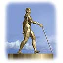
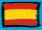
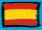

Note: A flag next to a link shows what language the website is in. If it is followed by this icon: ( ), it is a video in that spoken language. A flag followed by
), it is a video in that spoken language. A flag followed by  means it is in the sign language of that country.
means it is in the sign language of that country. 
 means there is International Gesture.
means there is International Gesture.
 AADB. How do Deaf-Blind People Communicate?
AADB. How do Deaf-Blind People Communicate?
Annala, L. (1980). Aspects of interpreting for deaf-visually impaired and deaf-blind people. Proceedings of the 1980 RID Convention, (pp. 97-101). Cincinnati, Ohio.
Aviation consumer protection. Discusses the rights of DeafBlind people to travel independently (alone) on airlines and other matters. See also Plane talk - Fact sheets on disabilities issues.
Bar-Tzur, D.
Blaha, R. and B. Carlson (n.d.) Issues regarding the assessment of vision loss in regard to Sign Language and fingerspelling for the student with Deaf-Blindness. This article offers some advice on how to modify fingerspelling for the Deafblind child.
California Deaf Blind Services: Fact sheet on the Tadoma Method.
Collins, S. D. (1993). Deaf-Blind interpreting: The structure of ASL and the interpreting process. In B. Winston Communication Forum: Vol. 2. (pp. 20-36). Washington, D. C., Gallaudet Publications.
DB-LINK. Communication.
Deaf-Blind freedom -- How far? is a discussion on the moral and ethical boundaries between the Deaf-Blind community and SSPs.
Deafblind International. Developments and innovations in interpreting for Deafblind people.
Deafblind intervener - Paraprofessional A (Texas).
Dewhurst, D, C. Vuphonics.
Experimental sensory-substitution system, a new approach to refreshable tactile display design, a design for a website for providing distant interpretation and mobility assistance for blind people.
Gasaway, M. & S. Lascek. (April-June 2003). What makes a good SSP and a good Deaf-Blind consumer?
General guidelines when meeting a Deafblind person.
Goujon, J. D. (11 November 2000). Interpreting in a Deaf-Blind setting.
Greenfield, R., Ford, J, and Fredericks, B. (1997). Communication: A manual for Volume III of the "You & me" video series. Monmouth, OR: Teaching Research. This manual accompanies the third of five videos that describe the education of a child who is deaf-blind. The video portrays Riley Ford, who is totally blind and has a profound hearing loss, and examines the concepts, skills and supports that are necessary for building an effective communication system for children who are deaf-blind. In the video, some of the techniques Riley's interpreter-tutor uses with him at school are discussed. The video and manual may be ordered from Teaching Research, Western Oregon University, �345 N. Monmouth Ave., Monmouth, OR 97361, (503) 838-8391. Fax: (503) 838-8150. The cost is $15.00. The video may be open captioned on request.
Jensema, C. K. (1979). A review of communication systems used by deaf-blind people: Part 1. American Annals of the Deaf, 124, 392-394.
Levin, D. (November 2001). Interpreting for Deafblind medical settings: Surgery.
LowVision.org. Deaf Blind information.
Measuring the dimensions of sensory communication at RLE. (Spring 1993)
Metcalf, C. (21 November 2001). Medical consent and Deafblind patients.
Morgan, S. Sign Language with people who are Deaf-Blind: Suggestions for tactile and visual modifications. Webmaster: Succint but well-thought-out.
Morris, P. (2001). Dealing with multiple roles. CD-ROM, Signs of Development, Inc.
Mortensen, O. E. (June 1999) A guided tour of the research on deafblind communication in 45 min.
Northwestern Connecticut Community College. National curriculum: An introduction to working and socializing with people who are Deaf-Blind. 208-page book, 384-page large print book, 72-minute video, 50-minute video, ASCII disk. ISBN: 1-58121-026-4. In braille. The materials include activities and programs that can be adapted for use in a multitude of settings to encourage a better understanding of the Deaf-Blind community. The two-video set offers five informative, easy-to-understand programs: - The Deaf-Blind community experience - Understanding technology used by people who are Deaf-Blind - Sighted guide techniques with people who are Deaf-Blind - Tactile communication methods and techniques - Interpreting adjustments.
NTDTV. [Israel] (2008, February 14). Blind, Deaf Actors Take Stage in Israel. ,
, ,
,
 This is not a avant-garde dance piece, but a group of deaf-blind actors. They're captivating audiences in Israel by blending touch, mime, sign-language and music in a cabaret-style show about dreams and disability.
This is not a avant-garde dance piece, but a group of deaf-blind actors. They're captivating audiences in Israel by blending touch, mime, sign-language and music in a cabaret-style show about dreams and disability.
O'Brien, S. and Steffen, C. (1996). Tactile ASL: ASL as used by Deaf-Blind persons. In L. Byers and M. Rose Communication Forum: Vol. 5. (pp. 145-158). Washington, D. C., Gallaudet Publications.
Reed, C.
 The implications of the Tadoma method of speechreading for spoken language processing. Downloadable text.
The implications of the Tadoma method of speechreading for spoken language processing. Downloadable text.
Smith, C. M. Human factors in haptic interfaces. How information is transmitted through touch.
Strategies for inclusion:
Creating a synagogue that is Blind/Deaf friendly.
Tan, H. Z.
 , W. M. Rabinowitz, and N. I. Durlach (1989). Analysis of a synthetic Tadoma system as a multidimensional tactile display.
, W. M. Rabinowitz, and N. I. Durlach (1989). Analysis of a synthetic Tadoma system as a multidimensional tactile display.
The Lorm Deafblind manual alphabet.
Think dual sensory: Good practice guidelines for older people with dual sensory loss (UK). Downloadable pdf file.
Wilson, R. M. (December 1998 Revised). Receptive communication: How children understand your messages to them.
Coalition of Organizations for Accessible Technology, , a new coalition of over 200 national, regional, state, and community-based disability organizations. We advocate for legislative and regulatory safeguards that will ensure full access by people with disabilities to evolving high speed broadband, wireless and other Internet Protocol (IP) technologies.
DeafblindInfo.org. Tools for independence.
Calabro, T. (2008, August 13). Advocate breaks the silence on disability rights. "Do I seem like a dangerous person or just a frustrated person?" Richard McGann asked after explaining his flaps with bureaucracies that cannot or will not provide the accommodations his deaf-blindness requires. "I want people to understand that I am friendly. I get so tired of the negativity of people who do not understand deaf-blindness. Sometimes I do explode."
 Assisted living devices
Assisted living devicesAdvance Corporation Braille-Tac Division. Architecturally designed interior/exterior way-finding
sign systems and standard & custom ADA compliant signs.
Assistive Technology - Independent Living Technologies. Communication, Hearing, Vision, Mobility, Ergonomics, Furniture, Lighting, Workstations, Software, Switches, Learning & Classroom, Bathroom, Keyboards & Mice, Kitchen & Household, Toys & Recreation, Personal Safety.
Deafblind/Visually impaired & Multiply Impaired. Articles, primarily on assistive living devices and education.
Gill, J. Dual sensory impairment - Devices for Deafblind people.
HearMore.com. Offers products to help the hearing impaired. Find amplified phones, TTY, TDD, alert systems, amplification devices, vibrators, door sensors, watches, books, and videos.
LargePrintReviews.com. Products for the blind and visually impaired and other features.
Lions Affordable Hearing Aid Project (Lions AHAP) fact sheet. Responding to a worldwide problem, the Lions Affordable Hearing Aid Project (AHAP) has developed a low cost, high quality hearing aid.
Products for the visually impaired.
Speech to braille computer interpreter.
SpringerLink - Book. Assistive Technology for the Hearing-impaired, Deaf and Deafblind.
Telesensory Low Vision Solutions.
Tiresias: Devices for blind and partially sighted people.
The Traveller is an electronic travel aid. It combines a straight-walker, a compass, an obstacle alarm, and a queue-minder. Worn high on the user's chest rather than hand-held, The Traveller provides hands-free and open-ear operation that is not affected by a user's cane or dog.
American Printing House for the Blind.
Blasch, B. B. (ed.), Wiener, W. R. (ed.), Welsh, R. L. (ed.). (November 1997). Foundations
of orientation and mobility American Foundation for the Blind. ISBN: 0891289461.
Brennan, M. (December 1983). Show me how: A manual for parents of preschool visually impaired and blind children. American Foundation for the Blind. ISBN: 0891281134.
Clark, J. L. Suddenly Slow: Poems.
Dodson-Burk, B., Hill, E. W. & Dobson-Burk, B. (September 1989). An
orientation and mobility primer for families and young children. American Foundation for the Blind. ISBN: 0891281576.
Doods, A. (August 1993). Rehabilitating blind and visually impaired people. Singular Publishing Group. ASIN: 156593153X.
Etheridge, D. (April 1995). Education of dual sensory impaired children: Recognizing and developing ability. Taylor & Francis. ISBN: 1853463353.
Everson, J. M. (January 1995). Supporting young adults who are Deaf-Blind in their communities: A transition planning guide for service providers, families, and friends. Paul H. Brookes Publishing Co. ISBN: 1557661618.
Foy, C. J. (September 1991). English-Spanish
basics for orientation and mobility instructors. American Foundation for the Blind. ISBN: 0891281924.
Goode, D. & Zola, I. K. (September 1994). A world without words: The social construction of children born deaf and blind. Temple University Press. ISBN: 1566392160.
Goodman, W. (April 1989). Mobility
training for people with disabilities: Children and adults with physical, mental, visual, and hearing impairments can learn to travel. Charles C. Thomas Pub Ltd. ISBN: 0398055726.
Haring, N. G. & Romer, L. T. (December 1995). Welcoming students who are Deaf-Blind into typical classrooms: Facilitating school participation, learning, and friendship. Paul H. Brookes Publishing Co. ISBN: 1557661448.
Heubner, K. M. (ed.), Prickett, J. G. (ed.), Rafalowski Welch, T. (ed.). (March 1995). Hand in hand: Essentials of communication and orientation and mobility for your students who are Deaf-Blind. American Foundation for the Blind. ISBN: 0891289372.
Hill, E. W. & Ponder, P. (December 1976). Orientation
and mobility techniques: A guide for the practitioner. American Foundation for the Blind. ISBN: 0891280014.
Jacobson, W. H. (November 1993). The art and science of teaching orientation and mobility to persons with visual impairments. American Foundation for the Blind. ISBN: 0891282459.
Jones, C. J. (1988, December). Evaluation and educational programming of deaf blind/severely multihandicapped students: Sensorimotor stage. Charles C. Thomas Publishing Ltd. ISBN: 0398055157.
Jurgens, M. R. (1977, December). Confrontation between the young deaf-blind child and the outer world. Swets & Zeitlinger. ISBN: 9026502613.
Keller, Helen: Books by and about.
LargePrintReviews.com. Reviews of large print books and audio books, low vision software evaluations, and other items of interest to individuals with low vision. There are also articles on eye health, eye diseases and disorders, accessibility issues, literature, products for the blind and visually impaired, plus travel articles and travel tips.
McInnes, J. M. (1999, June). A guide to planning and support for individuals who are Deafblind. University of Toronto Press. ISBN: 0802042422.
Pogrund, A. L. (1993, August). Teaching age-appropriate purposeful skills: An orientation & mobility curriculum for students with visual impairments. Texas School for the Blind. ISBN: 188036610X.
Sauerburger, D. (1993, July). Independence without sight or sound: Suggestions for practitioners working with Deaf-Blind adults. American Foundation for the Blind. ISBN: 0891282467.
Smith, T. B. (1994, October). Guidelines: Practical tips for working & socializing with Deaf-Blind people. Linstok Press. ISBN: 1881133060.
Treffry, J. A. (1994, December). Deaf-blind infants and children: A developmental guide. Publisher: University of Toronto Press, reprint edition. ISBN: 0802077870.
Walsh. (1981, September). Understanding and educating the Deaf-Blind, severely and profoundly handicapped: An international perspective. Charles C. Thomas Publishing Ltd. ISBN: 0398045143.
Camp Abilities: A loss of sight, but never a loss of vision - New York.
Deaf-Blind Access of the South.
Lions Camp Merrick - Maryland.
2001 Summer camps for children who are Deaf or Hard of Hearing. You will need Acrobat Reader and then search for Deaf and Blind camps.
Shellabarger, T. (2003, July-Aug). Jewish Deaf-Blind Community.
 Deaf-Blind community/culture 3
Deaf-Blind community/culture 3ASLJess. (2008, June 26). Deaf Blind Camp 2008.

Bar-Tzur, D. Humor and stories for interpreters: Deaf-Blind folk.
Clark, J. L.
DrDtheLiteracyQueen. (2007, August 05). Family - Deaf Blind Triplets.
Gallagher, G. (3 July 1997) Terminology - Deafblind, Deaf/Blind or Deaf-Blind?
Goff Paris, D. & S. K. Wood (eds). (2002). Step into the circle. American Indians, Alaska Natives and First Nations people who are deaf, deaf-blind and hard of hearing are a diverse group. This 8.5" by 11" soft cover book is a tribute to these cultures, with over 100 contributions. Includes photographs, artwork, poems, biographies and autobiographies. The book cover was designed by famed artist Tony Landon McGregor. (Deaf author)
Heidi Zimmer - Deaf Mountaineer. Heidi Zimmer, a Deaf woman who has Usher syndrome, has a major goal: climbing to the top of the Seven Summits (the highest peak on each continent). As a Deaf female mountaineer, Zimmer serves as a role model and inspiration to many. Zimmer also has several other goals: To become the oldest woman to climb Mt. Everest. To be the first disabled woman climber to complete all Seven Summits. To be the first disabled woman, the first Deaf and Usher Syndrome climber to climb Mt. Everest. To inspire others to pursue their dreams.
Hyatt, G. W. (2000, April 5). Web empowers a Deaf-Blind individual.
Kelleher, D. (1996) Driving with low vision.
Kruppenbacher, F. A. (Spring / Summer 2005). Alumni profiles: Arthur Babin. Scroll down to page 14.
Lanata, F. (2005, January-March). Teen corner: My college essay. The Deaf-Blind American, 44, 1. pp. 36-37. [M]y eye doctor diagnosed me with Usher Syndrome. I was forced with a new challenge, and I have never bneen one to shy away from a challenge. On a different plane I was thankful. It gave me new eyes; I developed a true love for passionate colors, melodious music, nature, and humans. Whereas before I wandered through life with a sheet of ice in my eyes, it began to melt, illuminating the true vision of the world.
Metcalf, C. (2005, January-March). Coping: Psychological and social issues of children with Type I Usher Syndrome. The Deaf-Blind American, 44, 1. pp. 38-44. "This paper seeks to help the reader identify better with children who have Usher Syndrome by exploring the physical and psychological dimensions of the disorder." Webmaster: The author has Usher Syndrome Type I himself and blend the cultural and pathological perspectives in an interesting way.
Miller, M. (June 17, 2006). The Blind-Deaf tech wiz, one man is inventing technology to lead an independent life - CBS News. It's hard to think of anyone who stands to gain more from technological innovation than those who have lost their hearing and sight. People like Anindya Bhattacharyya, who is both blind and deaf. He has a mission: to live as independently as possible and to change the lives of hundreds of thousands of people like himself throughout the world.
Moss, K. (Winter 1998). Driving with Usher Syndrome.
New Jersey Association of the Deaf Blind. To improve the quality of life of people who are deaf and/or blind.
Ovenell-Carter, J. (June 15, 2000) Long path to graduation.
SignOnSanDiego.com > Special Reports > Unbreakable Lives. The Stone family could have given up when they discovered the terrifying genetic time bomb of Usher syndrome facing their children. Instead, they met the challenges head-on, embarking on a journey not just to cope, but to transcend and to thrive.
tactiletheworld. [Canada]

 (2007, April 22). The A-Z's of DeafBlindhood. This is Coco and I'm signing an alphabet story about me being Deafblind through a journey.
(2007, April 22). The A-Z's of DeafBlindhood. This is Coco and I'm signing an alphabet story about me being Deafblind through a journey.
The Poetry Page by and for Deafblind People.
The Gallery. Artwork produced by deafblind people.
Just wondering outloud. (2005, August 25). Unique touch art.
Siegal, B. Unique Touch Art.
 Education for Deaf-Blind interpreters
Education for Deaf-Blind interpretersDeafWeb Washington: Sign Language, Interpreting, and Captioning Resources. Scroll down to "American Sign Language/Interpreting School (ASLIS) of Seattle."
Conferences, courses, events, seminars, and workshops throughout the world about Deafblindness.
Northeastern University (Boston, Massachusetts).
The Jewish Guild for the Blind - Resources. Webmaster: If you want to train interpreters / intervenors / SSSs, they offer Vision Simulator Cards: An interactive vision simulator that allows the user to experience the impact on vision of the four most common eye diseases: cataract, glaucoma, macular degeneration and diabetic retinopathy. You could use these with rubber bands and a blindfold for one eye to simulate various forms of blindness during practice guiding. The cheapest way to make blindfolds is to but long socks and safety pins and have the "blind" person's guide safety pin the sock over both eyes, or one eye if they will use a simulator card and a rubber band for the other eye.
2008 CEC Presentation Materials. Applying a Transdisciplinary Team Approach to the Systematic Instruction of Pivotal Milestones; Cochlear Implants: A Paradigm Shift for Children with Deaf-Blindness; Cochlear Implants & Multiple Disabilities: What We've Learned So Far; Developmental Milestones in Young Children and Infants with Deafblindness; Preparing Deaf-Blind Interveners: Teaching a Contact Position On-Line; Single-Subject Designs and the Field of Deafblindness; Teacher Efficacy in Special Education: Development of a Measure of Teachers’ Self-Efficacy in Deafblindness Education.
Clymer, E. W. & Wallber, M. J. (June 1996). Classroom material preparation for low-vision students. Requires Adobe Acrobat.
Deafblind/Visually impaired & Multiply Impaired. Articles, primarily on assistive living devices and education.
Gothelf, C., Crimmins, D. B., Mercer, C. A & Finocchiaro, P. A. Teaching Students Who Are Deaf-Blind and Cognitively Disabled To Effectively Communicate Choices During Mealtime.
Grassick, S. (27 October 2001)Teaching Deafblind children.
Introduction to sexuality education for individuals who are Deaf-Blind and significantly developmentally delayed. A free PDF version of over 100 pages of information and resources.
Metcalf, C. (2005, January-March). Coping: Psychological and social issues of children with Type I Usher Syndrome. The Deaf-Blind American, 44, 1. pp. 38-44. This paper seeks to help the reader identify better with children who have Usher Syndrome by exploring the physical and psychological dimensions of the disorder.
MUMS National Parent-to-Parent Network.
NETAC. Teaching students who are Deaf-Blind.
Perkins School for the Blind is committed to providing education and services that build productive, meaningful lives for children and adults around the world who are blind, deafblind or visually impaired with or without other disabilities.
Related Services Research Project to Support the Education of Students with Deaf-Blindness.
The Ohio Center for Deafblind Education (OCDBE) provides services in Ohio for individuals, birth through 21 years, with deafblindness, including free collaborative technical assistance to families, educational personnel and service providers through training and information dissemination. The OCDBE offers innovative approaches to the education of children and youth with deafblindness.
The Parent Advocacy Coalition for Educational Rights.
The Rehabilitation Research and Training Center on Blindness and Low Vision.
Deaf Blind links.
US Code collection. Title 29: Chapter 21 - Helen Keller National Center for Youths and Adults who are Deaf-Blind.
Wallber, M. J. & Clymer, E. W. (1996, November). Retention strategies for low vision students. A one page handout from the Proceedings of the Third Academic Convocation. (Requires Adobe Acrobat)
About.com. Deafblindness.
AllAboutVision.com. Eye problems and diseases.
Atwood, A., Clarkson, J. and Laba, C. (1992). Deaf-blindness. Washington, D. C.: Gallaudet University.
DB-LINK. The National Information Clearinghouse On Children Who Are Deaf-Blind.
Deaf-Blind - Deafness/Hard of Hearing links: MiningCo.com.
 General information in English (find those for other languages at International web sites)
General information in English (find those for other languages at International web sites)DeafBlindinfo.org showcases a vast collection of deafblindness information and resources in Minnesota and from around the world. Its Consumer Resource Guides aim to inform and empower adults, youth, families, and senior citizens with dual sensory impairment.
DeafLinx. Deaf-Blind.
Gallagher, G. Deafblindness bibliography.
Huebner, K. M. (April 1995)
Hand in hand: Selected reprints and annotated bibliography on working with students who are Deaf-Blind. American Foundation for the Blind. ISBN: 0891289380.
Information about Deafblindness. This is a British site, so some of it will be different than for the US, but it's just too good a site not to include here.
Information Center [on blindness]: American Federation of the Blind.
Interactive fingerspelling & braille guide. This website is being reorganized, and this feature is in flux.
International bibliography of sign language. Click on appropriate initial letter, then on "deaf-blind" or "Usher's syndrom [should be 'Usher syndrome']".
Laura's room: Resources for the Deafblind.
Lawhorn, Geraldine. (1991) An Autobiography by Geraldine Lawhorn. On Different Roads. Vantage Press, Inc. First Edition. ISBN #: 0533088240. A true story of courage in the face of adversity. Ms. Lawhorn was deaf and blind by the time she completed high school, but she did not allow this to embitter her.
Low vision/Blind & Deaf/Blind.
Mactavish, J. (2001) BRAVO Miss Brown. Toronto, Ontario: Hushion House Publishing Ltd.
The National Directory of Interpreters and Support Service Providers Who Work With Deaf-Blind Individuals (2nd edition 2000) is an essential resource for anyone needing interpreter services. The directory is arranged by state and provides contact information, data on certification, availability, and experience. Available free of charge from the National Interpreter Education Project, Northwestern Connecticut Community College, Park Place, Winsted, CT 06098;
tel. V/TTY 860-738-6382; email: NW_MYERS@commnet.edu. Available in Braille, large print, and computer disk.
North Carolina Deaf-Blind Associates. Our mission is to advocate for the needs and rights of individuals who are Deaf-Blind and to enable individuals who are Deaf-Blind to achieve their maximum potential by being independent and productive in the mainstream as citizens of the state of North Carolina.
Smith, R. and Steffen, C. (1996). Deaf-blind cultural issues. Gallaudet University. ms.
The National Technical Assistance Consortium for Children and Young Adults Who Are Deaf-Blind.
Canine Companions for Independence.
Guide Dog Foundation for the Blind.
Guide Dogs for the Blind, Inc.
International Association of
Assistance Dog Partners (IAADP).
Leader Guide Dogs for the Blind.
Boggs-Qualls, R. & D. Greene. Walking free: The Nellie Zimmerman story. When Nellie lost her hearing her father learned how to talk with her by using the American Manual Alphabet. When she lost her sight and could no longer see his hand signs he learned how to spell his words in to her hands. But the rest of the family refused to learn how to talk with her in this way. After her father's death, Nellie was eventually committed to a state mental hospital. No one on the staff knew how to talk with her. Nellies lived in silence for 19 years. Upon her release, with the help of her companion Emily Street, who know this deaf alphabet, she was able to go to college, become a well-known lecturer, and worked as a life-skills instructor at a group home for deaf and deaf-blind boys.
Bridgman, Laura and Julia Brace - About.com. Two largely-forgotten deafblind women from the 19th century.
Cobb, L. (1834). The deaf, dumb, and blind girl. From Cobb's Juvenile Reader, Kickok and Shugert, in the San Francisco State University, Marguerite Archer Collection of Historic Children's Materials.
DeafBlind.org DeafBlind history.
Freeberg, E. (2001). Education of Laura Bridgman: First deaf and blind person to learn language. Visitors to London, England's Great Exhibition in 1851 were treated to America's contribution to nineteenth-century civilization. Dr. Samuel Gridley Howe, director of the Perkins Institution for the Blind in Boston, Massachusetts, presented the education of Laura Bridgman as a lesson in humanity. Howe proudly proclaimed Laura as one of the most famous people in the world. Her education was notable because she was not only blind, but deaf as well. She entered the school at age 7, and 14 years later at the Exhibition in London, was able to speak, read, and write with the help of a manual alphabet after a childhood with no sight or sound.
Gitter, E. (2001). Imprisoned guest: Samuel Howe and Laura Bridgman, the Original Deaf-Blind Girl. In 1837, Samuel Gridley Howe set out to save young Laura Bridgman from her dark and silent world. The deaf-blind 7-year-old was taught to fingerspell, read raised letters, and even write legibly. She had influential writers and reformers such as Darwin, Carlyle, and Dickens visit and write about her. But by the time she died in 1889, Bridgman was eclipsed in popularity by the prettier, more congenial Helen Keller. This absorbing account of the intersection of two extraordinary lives reintroduces Laura Bridgman to the attention of the 21st century reader.
Herrmann, D. (1988). Helen Keller, A life. Most people associate Helen Keller with William Gibson's The Miracle Worker, but she faced many more challenges in her life until her death in 1968. This novel will take the reader through a life that would have crushed the spririt of a woman less stoic and adaptable, speaking on the world she encountered daily and how she dealt with it. It also touches upon the controversy involving Keller's teacher, Annie Sullivan, whom critics believe was not a miracle worker but a woman who used Keller as a way to gain fame and fortune. Read this book to gain an in-depth look at the real Helen Keller, a beautiful, high-strung and enigmatic individual who might have grown up as a spoiled and willful Southern woman if not for her disabilities.
Keller, Helen: American Federation of the Blind. Hundreds of documents and pictures.
Keller, Helen: a "starter course".
www.disabilityfilms.co.uk.
 Helen Keller in her story. Film (1955) USA, documentary. Helen Keller's life from birth to the seventies. Some newsreel footage of Ann Sullivan her early teacher and companion. This won the Academy Award for best feature documentary 1956.
Helen Keller in her story. Film (1955) USA, documentary. Helen Keller's life from birth to the seventies. Some newsreel footage of Ann Sullivan her early teacher and companion. This won the Academy Award for best feature documentary 1956.
 Helen Keller: The miracle continues. Made-for-TV film (1984) USA, biography. Winningham plays Helen Keller in a later period of her life.
Helen Keller: The miracle continues. Made-for-TV film (1984) USA, biography. Winningham plays Helen Keller in a later period of her life.
 The miracle worker. B/W film (1962) USA, 107 min, drama. Director: Arthur Penn, cast: Anne Bancroft, Patty Duke, Victor Jory, Inga Swenson, Andrew Prine, Beah Richards. The Helen Keller story (she is a blind, deaf and speaking impaired). Perhaps the film which everybody has heard of about Helen Keller.
The miracle worker. B/W film (1962) USA, 107 min, drama. Director: Arthur Penn, cast: Anne Bancroft, Patty Duke, Victor Jory, Inga Swenson, Andrew Prine, Beah Richards. The Helen Keller story (she is a blind, deaf and speaking impaired). Perhaps the film which everybody has heard of about Helen Keller.
 The miracle worker. Made-for-TV film (1979) USA, 100 min, drama. The only reason I can think for making this film is that the original is in black and white. Patty Duke now plays the Ann Bancroft role.
The miracle worker. Made-for-TV film (1979) USA, 100 min, drama. The only reason I can think for making this film is that the original is in black and white. Patty Duke now plays the Ann Bancroft role.
 Monday after the miracle. TV film (1998) USA, biography. This film expands the Helen Keller story beyond the early years. She's studying at Radcliffe College and she's writing a series of articles and a book. Useful addition to The Miracle Worker (1962).
Monday after the miracle. TV film (1998) USA, biography. This film expands the Helen Keller story beyond the early years. She's studying at Radcliffe College and she's writing a series of articles and a book. Useful addition to The Miracle Worker (1962).
 The unconquered (Helen Keller in her story.) Film (1954) USA, documentary. Helen Keller's story told through newsreels and reconstructions. Dorothy Herrmann's book "Helen Keller: A Life" is said to be a good, complex, account which shows Keller as a whole person and not a "plaster saint."
The unconquered (Helen Keller in her story.) Film (1954) USA, documentary. Helen Keller's story told through newsreels and reconstructions. Dorothy Herrmann's book "Helen Keller: A Life" is said to be a good, complex, account which shows Keller as a whole person and not a "plaster saint."
 Journals, newspapers and newsletters in English (find those in other languages at web sites)
Journals, newspapers and newsletters in English (find those in other languages at web sites) BEACON:
Australian DeafBlind Council Newsletter.
California Deaf-Blind Services Newsletter.
DBInews. A monthly publication of DeafBlindInfo.org, Minnesota's online resource about DeafBlind services and community.new features for visitors to the site. It is hosted by Yahoo! Groups.
Deafblind American, edited by Harry Anderson. E-mail: hca@AUG.COM , published by the American Association of the Deaf-Blind, 814 Thayer Avenue Suite 300, Silver Spring, MD 20910-4500. Phone: 301 588-6545 fax: 301 588-8705.
Deafblind Education, published by the International Association for the Education of Deafblind people (IAEDB), c/o Sense, 11-13 Clifton Terrace, Finsbury Park, London, ENGLAND N4 3SR. E-mail: enquiries@sense.org.uk Available to members, of which there are 2 types: Individual membership is open to anyone, and is free. An annual donation of £10 or $US 20 is requested. Corporate Membership is open to any school, association, society, institution or similar organization. There is an annual subscription of £100 or $US200. Available in English or Spanish.
Deaf-Blind Perspectives is published three times yearly by the Teaching Research Division of Western Oregon State College. Mail: Deaf-Blind Perspectives, Teaching Research Division, 345 N. Monmouth Ave., Monmouth, OR. Phone: Randy Klumph, (503) 838-8885 (V), 503 838-8821 (TTY). Fax: 503 838-8150. E-mail: klumphr@fstr.wou.edu.
Indicate media preference: Standard print; Large print; Grade 2 Braille; ASCII; WordPerfect 5.1.
Deafblind Techies Newsletter. The first link is broken, but don't give up.
hovpod. (8 September 2006). Hovercraft driven by Deaf and Blind man across the Solent! (
( ) Hovercraft charity stunt, Graham Hicks is a deaf and blind stuntman who just through touch control, is up for any challenge. He is simply amazing, and refuses to let his handicap stop him having fun! See him drive the Hov Pod Hovercraft with two passengers across the Solent and back, saves taking the ferry !
) Hovercraft charity stunt, Graham Hicks is a deaf and blind stuntman who just through touch control, is up for any challenge. He is simply amazing, and refuses to let his handicap stop him having fun! See him drive the Hov Pod Hovercraft with two passengers across the Solent and back, saves taking the ferry !
In Touch is the newsletter of the Center for Disabilities Deaf-Blind Program. It is produced by the staff of the Deaf-Blind Program [South Dakota] and is published three times each year.
LargePrintReviews.com. Articles on eye health, eye diseases and disorders, accessibility issues, literature, products for the blind and visually impaired, plus travel articles and travel tips.
O'Brien, S. and Steffen, C. (1996). Tactile ASL: ASL as used by Deaf-Blind persons. In L. Byers and M. Rose Communication Forum: Vol. 5. (pp. 145-158). Washington, D. C., Gallaudet Publications.
RP Messenger. Published by TARP� about Retinitis Pigmentosa. It also includes a certain amount of information about Usher Syndrome. Managing editor: Dorothy Stiefel dstiefel@mail.interconnect.net. For further information contact: Texas Association of Retinitis Pigmentosa, Inc. (TARP), P.O. Box 8388, Corpus Christi, Texas 78468-8388. Voice/TDD/fax: 512 852 8515.
SEE HEAR. A Quarterly Newsletter For Families And Professionals On Visual Impairments And Deafblindness. A collaborative effort of the Texas School for the Blind and Visually Impaired and Department of Assistive and Rehabilitative Services, Division for Blind Services
Talking Sense is published quarterly by Sense. The annual subscription is £10. For further information contact: 11-13 Clifton Terrace, Finsbury Park, London, ENGLAND N4 3SR. E-mail: enquiries@sense.org.uk.
The Tactile Mind Weekly. Week after week, The Tactile Mind Weekly dishes out signing community wit and wisdom. John Lee Clark, Trudy Suggs, Christopher Jon Heuer, Sara Stallard, Adrean Clark, and Raymond Luczak maintain weekly columns alongside regular appearances by guest writers. This free publication also keeps readers abreast of new The Tactile Mind Press titles. Surrogate formats of our products can be made available for large print and Braille readers. To get items in the format desired, simply order the items and then e-mail us details about your preferences. For large print requests, please specify the font and size of choice.
Usher Around the World. Editor in Chief: Maggie King mking@interaccess.com. Mail: Usher Around the World, c/o Kathie Anderson, P.O. Box 17318, Minneapolis, MN. 55417 USA. Cost per year is $16.00 in USA, $19.00 in Canada & Mexico and $22.00 all other. Indicate if you are US 1, US 2, US 3, family member, or professional. Please specify preferred format: large print, Braille or audio.
 Mailing lists/ chat sites in English (find those in other languages at web sites)
Mailing lists/ chat sites in English (find those in other languages at web sites) Mailing list are group discussion by e-mail, where all submissions and responses of a group are sent to a central location and then back to all members so that everyone's comments on a focus topic (sometimes it loses its focus, sigh) can be read.
AADB Listserv - A new listserv for AADB members for the purpose of exchanging ideas and information about AADB and the national deaf-blind community. Randall Pope is the moderator for this new listserv. Members who wish to subscribe should send an email to aadb-L-subscribe-request@wou.edu.
AER-Rehab@topica.com is an online discussion forum designed for consumers as well as professionals about rehabilitation-related approaches and techniques, research, administrative challenges, public policy, and current crtiical issues hosted by the Association for Education and Rehabilitation of the Blind and Visually Impaired. Send a blank e-mail to: AER-Rehab-subscribe@topica.com
CHARGE-L. Send e-mail to: majordomo@avenza.com
Subject: (leave blank)
Body of message: SUBSCRIBE CHARGE-L <your email address>.
Subject: (leave blank)
Body of message: subscribe rplist (your first and last name).
Subject: (leave blank)
Body of message: SUBSRIBE USHER-LIST <your email address>.
Closing the Gap Forums is a discussion board exploring the many ways that technology is being used to enhance the lives of people with special needs.
DBED-L, Deaf-Blind Education (Public).
DbI-Interpreters-Development-Network. The Interpreter Network hopes to bring interpreters for the deafblind and deafblind people themselves from various countries closer together to share information and materials. Deafblind people are very welcome because they can also share information and materials. We are aware that not all countries are equally advanced. For example, there is an issue about developing a system of paid interpreters and how to get this up and running. So we want to share ideas and answer questions together.
dbintervenors is a chat group for intervenors, SSPs and their supporters. To subscribe, send a blank e-mail to: dbintervenors-subscribe@yahoogroups.ca.
dbspirit. By sharing Bible verses, prayer requests, songs, praises, testimony, and plain sharing and fellowship with one another with the common bond of being Deaf Blind, Christian, and often have contacts with other believers. We welcome anyone who will share and edify one another through Scriptures and JOY of fellowship in HIM!
DB-Spousal Support
group for spouses and partners of persons who are deaf-blind (DB) or
hearing-and-visually-impaired (HAVI). Subscribe to this group by sending a blank
e-mail request to: DB-Spousal-Support-subscribe@yahoogroups.com
DBTEENS, Private Discussion List for Deaf-Blind Teenagers and Young Adults. Its purpose is to share information, inquiries, ideas and opinions about deaf-blindness and other issues and to share the daily events in our lives. This is a private list for teenagers and young adults.
DBWOMENCHAT or alternate site. This list aims to support women who live with the daily challenges of Deafness and Blindness. Issues discussed may include fashion, relationships, and communication needs. This list is for all Deafblind women to support each other in any way you see fit.
DEAFANDBLIND. Disabled club for the blind and deaf.
DEAFBLINDESS. For people who are deafblind or are friends or family to a deaf blind person. It is really for anyone that is interested in learning about this topic.
DeafBlindLGBT. This group is for people who are Deaf-Blind and Lesbian, Gay, Bisexual, or Transgender.
DeafBlind_Terps. The aim of this international group is to share experiences and ideas about interpretation for deafblind peopl���e as well as any other communication related topics. Everyone can participate in the
discussion: hearing or deaf interpreters, deafblind people, deaf people, professionals, or any people who are just intere���sted in the subject.
DEAFBLND. The purpose of this list is to share information, inquiries, ideas and opinions on matters pertaining to Deaf-Blindness. This list is open to professionals, persons who are deaf-blind, and to their families and friends. This includes the archives.
Lista de distribución de correo sobre Sordoceguera (Castellano). El tópico de la lista es la Sordoceguera.
Para subscribirse a la lista enviar un mensaje a: LISTSERV@LISTSERV.REDIRIS.ES y en el cuerpo del mensaje escribir: "subscribe SORDOCEGUERA nombre y apellidos" (sin comillas). Si necesita más información sobre la lista SORDOCEGUERA o asistencia, contacte con Ricard López.
L-Soft. Click on "Search for a mailing list of interest" and search "deaf blind".
Mailing lists and newsletters for Deafblind people.
The Officers of Deaf-Blind Officers listserv is a networking place for the officers of DB organizations where they can share anything pertaining to ADA, legislation, issues, conferences, meeting management, transportation and interpreter strategies, and fundraising ideas.
If you are an officer of a deaf-blind organization and would like to join us, please contact us: Jill Gaus - jgaus@absolute-net.com, Lynn Jansen - LynnSmilin@aol.com, Randall Pope - rpope5@carolina.rr.com.
Registry of Interpreters for the Deaf: Deaf-Blind Member Section. We are a special interest group of RID interpreters who work with Deaf-Blind individuals to provide a relationship-building forum to share information, education, and concerns in our field. This group is open to all RID Deaf-Blind interpreters and Deaf-Blind Individuals interested in the field of interpreting.
RPLIST. Send e-mail to: listserv@maelstrom.stjohns.edu
Usher-Friends. This list is for people with Usher Syndrome (an incurable genetic disorder that robs both hearing and sight) who like to sit down with their favorite drink and chat about anything that comes to mind.
USHER-LIST. Send e-mail to: majordomo@farside.cc.misu.nodak.edu
USHERS, Ushers Syndrome Mailing List (Public).
 [American] Organizations (find those for other countries at web sites)AADB - American Association of the Deaf Blind is a national consumer organization of, by, and for people with both vision and hearing losses. Members have all types and degrees of combined vision and hearing losses. We also welcome others as members who have an interest in the works of AADB and the deaf-blind community.
ADBC - Arkansas DeafBlind Community is the ONLY consumer directed organization in Arkansas that represents the interests of the deafblind population. In addition, we help one another by sharing ideas and resources aiding in making the deafblind community statewide a perfect place for us. To that end our organizational goals include providing a social network for sharing information, offering workshops on employment, independent living, leadership skills, and computer technology, and sponsoring Deafblind Arkansans to attend a biennial convention of the American Association of the DeafBlind.
AFB - American Foundation for the Blind is a national nonprofit that expands possibilities for people with vision loss. AFB's priorities include broadening access to technology; elevating the quality of information and tools for the professionals who serve people with vision loss; and promoting independent and healthy living for people with vision loss by providing them and their families with relevant and timely resources. AFB's work in these areas is supported by the strong presence the organization maintains in Washington, DC, ensuring the rights and interests of people with vision loss are represented in our nation's public policies.
Alabama Institute for Deaf and Blind. The world's most comprehensive education, rehabilitation and employment system serving children and adults who are deaf, blind and multidisabled. With five campuses and nine regional centers throughout the state, AIDB has been investing in the lives of thousands of infants, toddlers, children, adults and seniors who are challenged by hearing and vision loss for 150 years.
Deaf-Blind Service Center. The Deaf-Blind Service Center believes communication is the core issue in providing quality services to Deaf-Blind people. Within DBSC, high quality communication with Deaf-Blind people is insured in these ways: 1) All information is provided in the desired communication mode of the person being served, whether that is braille, close vision or tactile communication; 2) Our staff possesses a complementary set of language and communication skills, to meet the broadest possible spectrum of language and communication needs; 3) We obtain qualified interpreters for larger meetings or when the communication needs of the Deaf-Blind person cannot be met within DBSC's in-house resources; 4) We conduct all advocacy and case planning with the fullest possible participation of the Deaf-Blind individual.
Helen Keller National Center For Deaf-Blind Youths & Adults. Our mission is to enable each person who is deaf-blind to live and work in his or her community of choice. Authorized by an Act of Congress in 1967, the Helen Keller National Center for Deaf-Blind Youths and Adults (HKNC) is a national rehabilitation program serving youth and adults who are deaf-blind. The Center provides services to youth and adults who are deaf-blind according to the definition of deaf-blindness in the Helen Keller Act.
Helen Keller Services for the Blind. Our mission is to help individuals of all ages who are blind or visually impaired, and who may have additional disabilities, to develop independence and to participate actively in their communities. Basic rehabilitation services, such as training in safe travel and daily living skills, are provided to approximately 2,000 clients in the New York metropolitan area each year. In addition, we annually screen close to 25,000 youngsters for eye disorders that will lead to permanent visual impairment if not detected and treated early in a child's life.
Minnesota DeafBlind Association. As the only organization serving DeafBlind people in Minnesota that is governed by DeafBlind people, MDBA is a focal point of the Minnesota DeafBlind community. MDBA’s DeafBlind leadership meetings, community workshops and special events allow DeafBlind people to thrive and flourish in a kinship of support and solidarity. Established in 1979, MDBA is committed to providing information, education, advocacy and other services to persons who are DeafBlind, family members, parents of deafblind children, allies and professionals.
Montana IDEA Deaf-Blind Services. The fundamental goal... is to empower Montana's individuals with deaf-blindness, by providing them, their families and service providers an array of technical assistance and training opportunities specifically designed to meet the individual and unique needs of children and young adults 0-21 that are identified as having deaf-blindness. The services provided by the Deaf-Blind Project are available in all settings and environments dictated by the precise and unique needs of each individual with deaf-blindness.
Project Reach: Illinois Deaf-Blind Services.
RID's Special Interest Groups (SIGS). Scroll down to "Interpreters for the Deaf-Blind".
Seattle Lighthouse for the Blind.
Six Friends: Organizations of and for the Deafblind.
The CHARGE Syndrome Foundation. Our mission is to provide support to individuals with CHARGE syndrome and their families; to gather, develop, maintain and distribute information about CHARGE syndrome; and to promote awareness and research regarding its identification, cause and management.
The Deaf-Blind Explorers. A non-profit organization dedicated to provide soluations for traveling needs of the deaf-blind.
The National Family Association for Deaf-Blind (NFADB) is a non-profit, volunteer-based family association. Our philosophy is that individuals who are deaf-blind are valued members of society and are entitled to the same opportunities and choices as other members of the community. NFADB is the largest national network of families focusing on issues surrounding deaf blindness.
The National Technical Assistance Consortium for Children and Young Adults Who Are Deaf-Blind strives to improve the quality of early intervention, education and transition services to children and young adults who are deaf-blind. This is accomplished by providing technical assistance on effective practice and promoting collaborative partnerships for meeting the unique and diverse needs of children and young adults who are deaf-blind and their families.
The Ohio Center for Deafblind Education (OCDBE) provides services in Ohio for individuals, birth through 21 years, with deafblindness, including free collaborative technical assistance to families, educational personnel and service providers through training and information dissemination. The OCDBE offers innovative approaches to the education of children and youth with deafblindness.
The Parent Advocacy Coalition for Educational Rights (PACER) Center. Our mission is to expand opportunities and enhance the quality of life of children and young adults with disabilities and their families, based on the concept of parents helping parents.
The Perkins School for the Blind provides its students with the tools and knowledge to chart a course toward each individual's maximum level of independence, rich in experience and overflowing with potential.
USA organizations for Deafblind people.
Washington State Deaf-Blind Citizens, Inc. Mission Statement: To establish with specific interest of encouraging and promoting educational, economic, and social welfare; to encourage fellowship; to defend our rights, and advance an organization in which members can participate in the discussion of problems and solutions relative to their welfare and prosperity.
[American] Organizations (find those for other countries at web sites)AADB - American Association of the Deaf Blind is a national consumer organization of, by, and for people with both vision and hearing losses. Members have all types and degrees of combined vision and hearing losses. We also welcome others as members who have an interest in the works of AADB and the deaf-blind community.
ADBC - Arkansas DeafBlind Community is the ONLY consumer directed organization in Arkansas that represents the interests of the deafblind population. In addition, we help one another by sharing ideas and resources aiding in making the deafblind community statewide a perfect place for us. To that end our organizational goals include providing a social network for sharing information, offering workshops on employment, independent living, leadership skills, and computer technology, and sponsoring Deafblind Arkansans to attend a biennial convention of the American Association of the DeafBlind.
AFB - American Foundation for the Blind is a national nonprofit that expands possibilities for people with vision loss. AFB's priorities include broadening access to technology; elevating the quality of information and tools for the professionals who serve people with vision loss; and promoting independent and healthy living for people with vision loss by providing them and their families with relevant and timely resources. AFB's work in these areas is supported by the strong presence the organization maintains in Washington, DC, ensuring the rights and interests of people with vision loss are represented in our nation's public policies.
Alabama Institute for Deaf and Blind. The world's most comprehensive education, rehabilitation and employment system serving children and adults who are deaf, blind and multidisabled. With five campuses and nine regional centers throughout the state, AIDB has been investing in the lives of thousands of infants, toddlers, children, adults and seniors who are challenged by hearing and vision loss for 150 years.
Deaf-Blind Service Center. The Deaf-Blind Service Center believes communication is the core issue in providing quality services to Deaf-Blind people. Within DBSC, high quality communication with Deaf-Blind people is insured in these ways: 1) All information is provided in the desired communication mode of the person being served, whether that is braille, close vision or tactile communication; 2) Our staff possesses a complementary set of language and communication skills, to meet the broadest possible spectrum of language and communication needs; 3) We obtain qualified interpreters for larger meetings or when the communication needs of the Deaf-Blind person cannot be met within DBSC's in-house resources; 4) We conduct all advocacy and case planning with the fullest possible participation of the Deaf-Blind individual.
Helen Keller National Center For Deaf-Blind Youths & Adults. Our mission is to enable each person who is deaf-blind to live and work in his or her community of choice. Authorized by an Act of Congress in 1967, the Helen Keller National Center for Deaf-Blind Youths and Adults (HKNC) is a national rehabilitation program serving youth and adults who are deaf-blind. The Center provides services to youth and adults who are deaf-blind according to the definition of deaf-blindness in the Helen Keller Act.
Helen Keller Services for the Blind. Our mission is to help individuals of all ages who are blind or visually impaired, and who may have additional disabilities, to develop independence and to participate actively in their communities. Basic rehabilitation services, such as training in safe travel and daily living skills, are provided to approximately 2,000 clients in the New York metropolitan area each year. In addition, we annually screen close to 25,000 youngsters for eye disorders that will lead to permanent visual impairment if not detected and treated early in a child's life.
Minnesota DeafBlind Association. As the only organization serving DeafBlind people in Minnesota that is governed by DeafBlind people, MDBA is a focal point of the Minnesota DeafBlind community. MDBA’s DeafBlind leadership meetings, community workshops and special events allow DeafBlind people to thrive and flourish in a kinship of support and solidarity. Established in 1979, MDBA is committed to providing information, education, advocacy and other services to persons who are DeafBlind, family members, parents of deafblind children, allies and professionals.
Montana IDEA Deaf-Blind Services. The fundamental goal... is to empower Montana's individuals with deaf-blindness, by providing them, their families and service providers an array of technical assistance and training opportunities specifically designed to meet the individual and unique needs of children and young adults 0-21 that are identified as having deaf-blindness. The services provided by the Deaf-Blind Project are available in all settings and environments dictated by the precise and unique needs of each individual with deaf-blindness.
Project Reach: Illinois Deaf-Blind Services.
RID's Special Interest Groups (SIGS). Scroll down to "Interpreters for the Deaf-Blind".
Seattle Lighthouse for the Blind.
Six Friends: Organizations of and for the Deafblind.
The CHARGE Syndrome Foundation. Our mission is to provide support to individuals with CHARGE syndrome and their families; to gather, develop, maintain and distribute information about CHARGE syndrome; and to promote awareness and research regarding its identification, cause and management.
The Deaf-Blind Explorers. A non-profit organization dedicated to provide soluations for traveling needs of the deaf-blind.
The National Family Association for Deaf-Blind (NFADB) is a non-profit, volunteer-based family association. Our philosophy is that individuals who are deaf-blind are valued members of society and are entitled to the same opportunities and choices as other members of the community. NFADB is the largest national network of families focusing on issues surrounding deaf blindness.
The National Technical Assistance Consortium for Children and Young Adults Who Are Deaf-Blind strives to improve the quality of early intervention, education and transition services to children and young adults who are deaf-blind. This is accomplished by providing technical assistance on effective practice and promoting collaborative partnerships for meeting the unique and diverse needs of children and young adults who are deaf-blind and their families.
The Ohio Center for Deafblind Education (OCDBE) provides services in Ohio for individuals, birth through 21 years, with deafblindness, including free collaborative technical assistance to families, educational personnel and service providers through training and information dissemination. The OCDBE offers innovative approaches to the education of children and youth with deafblindness.
The Parent Advocacy Coalition for Educational Rights (PACER) Center. Our mission is to expand opportunities and enhance the quality of life of children and young adults with disabilities and their families, based on the concept of parents helping parents.
The Perkins School for the Blind provides its students with the tools and knowledge to chart a course toward each individual's maximum level of independence, rich in experience and overflowing with potential.
USA organizations for Deafblind people.
Washington State Deaf-Blind Citizens, Inc. Mission Statement: To establish with specific interest of encouraging and promoting educational, economic, and social welfare; to encourage fellowship; to defend our rights, and advance an organization in which members can participate in the discussion of problems and solutions relative to their welfare and prosperity.
 Orientation and mobility
Blasch B. B. (Ed.), W. R. Wiener (Ed.), and R. L. Welsh. (November 1997). Foundations of orientation and mobility. American Foundation for the Blind; ISBN: 0891289461.
Brennan, M. (Ed.) (December 1983). Show me how: A manual for parents of preschool visually impaired and blind children. American Foundation for the Blind; ISBN: 0891281134.
Dodds, A.
Rehabilitating blind and visually impaired people. ASIN: 156593153X.
Dodson-Burk, B. and E. W. Hill. (May 1989). An orientation and mobility primer for families and young children. American Foundation for the Blind; ISBN: 0891281576.
Foy, C. J. (September 1991). English-Spanish basics for orientation and mobility instructors. American Foundation for the Blind; ISBN: 0891281924.
Goodman, W. (April 1989). Mobility training for people with disabilities: Children and adults with physical, mental, visual, and hearing impairments can learn to travel. Charles C. Thomas Pub Ltd; ISBN: 0398055726.
Heubner, K. M. (Ed.), E. Joffee (Ed.), J. G. Prickett (Ed.), T. Rafalowski Welch (Ed.) (March 1995). Hand in hand: Essentials of communication and orientation and mobility for your students who are Deaf-Blind. American Foundation for the Blind; ISBN: 0891289372.
Hill, E. W. and P. Ponder. (June 1976). Orientation and mobility techniques: A guide for the practitioner. American Foundation for the Blind; ISBN: 0891280014.
Jacobson, W. H. (November 1993). The art and science of teaching orientation and mobility to persons with visual impairments. American Foundation for the Blind; ISBN: 0891282459.
Pogrund, R. L. (August 1993). Teaching
age-appropriate purposeful skills: An orientation and mobility curriculum for students with visual impairments. Texas School for the Blind; ISBN: 188036610X.
Usher Syndrome and other causes of Deaf-Blindness
Family Village. Usher Syndrome.
ginfpca. (2007, April 24). Usher Syndrome Trivia Challenge Follow-Up.
 Minnow's Place: CHARGE Syndrome.
National Center for the Study and Treament of Usher Syndrome.
NIDCD health information: Usher Syndrome. Webmaster: Very clear and concise.
poofyalmond. (2007, December 14). Living With Usher Syndrome.
Minnow's Place: CHARGE Syndrome.
National Center for the Study and Treament of Usher Syndrome.
NIDCD health information: Usher Syndrome. Webmaster: Very clear and concise.
poofyalmond. (2007, December 14). Living With Usher Syndrome.
 This is a documentary style vid I made recently for school about a man surviving with a disease which causes deafness and blindness.
RP: Through a Tunnel Darkly. Soundprints radio show on RP (downloadable).
This is a documentary style vid I made recently for school about a man surviving with a disease which causes deafness and blindness.
RP: Through a Tunnel Darkly. Soundprints radio show on RP (downloadable).
TARP. Usher Syndrome page.
Vision Simulation Video - American Foundation for the Blind. See for yourself what the most common age-related eye conditions look like. Note: This video may take several seconds to load. Thanks for your patience!
Wenberg, J. Retinitis Pigmentosa page.
 Videotapes in English (find those for other countries at web sites)
Videotapes in English (find those for other countries at web sites)Assume nothing: An introduction to Deafblindness. West Australian Deafblind Assoc (WADBA) has released its deafblind awareness and training video. Six clients of WADBA are highlighted, from the very young to adults, all with varying degrees of hearing and vision loss. The focus is on what people who are deafblind CAN do, given appropriate supports and services. Issues presented include communication, early intervention, education, technology, career choice, recreation, independence and interpreting.
Massoud, L.
Interpreting in various settings [Videotape in 3 volumes]. Harris Communications. Settings discussed: oral, educational (K-12 and post-secondary), employment/rehabilitation, performing arts Interpreting, medical Interpreting, telephone, round table, Deaf-Blind, interpreting for mis-educated Deaf persons, legal, artistic (music), ASL to English, religious, platform, and health/counseling.
Sacks, O. (1998). The Ragin' Cajun: Usher Syndrome [Videotape]. Princeton, NJ: Films for the humanities and sciences.
Smith, T. Deaf-Blind communication and community.
 International web sites
International web sitesNote: A flag next to a link shows what language the website is in. If it is followed by this icon: ( ), it is a video in that spoken language. A flag followed by
), it is a video in that spoken language. A flag followed by  means it is in the sign language of that country.
means it is in the sign language of that country. 
 means there is International Gesture.
means there is International Gesture.
Select a country from the table below or scroll down.
Conferences, courses, events, seminars, and workshops throughout the world about Deafblindness.
Internationaal site's Doofblinden.
Mishra, S. & Simms, B. Including Deafblind Children. For deafblind children and their families, the Salamanca Statement was a breakthrough. It was the first major international declaration to make reference to the specific needs of deafblind children.(1) However, in the experience of Sense International and its partners, Salamanca has had little or no positive effect on the numbers of deafblind children(2) accessing formal educational opportunities, and there is little understanding of how a deafblind child can be supported within either mainstream or specialist settings.(3) This article highlights the problems facing deafblind children with examples of individual children with whom Sense International is working in India. It raises questions about our understanding of the term 'inclusion' and how this is being interpreted 'on the ground' by national governments and child rights activists.
Organizations for Deafblind people throughout the world.
The World Blind Union (WBU) is the international voice of 180-million blind and visually impaired people. With member organizations in virtually every country in the world, WBU works to promote equal opportunities for blind and visually impaired people; to raise the status of blind women, DeafBlind persons, blind people with multiple disabilities; and to further international cooperation between organizations working for the welfare of people who are blind and the prevention of blindness throughout the world.
World Federation of the Deafblind.
African organizations for Deafblind people.
Kamau, K. (n.d.). Community based rehabilitation of Deafblind people in East Africa.
Perkins - Expanding Educational Opportunities in Africa.
Sense International - East Africa.
EBU Commission on Activities of Deafblind People.
European organizations for Deafblind people.
Hawcroft, L.
Service providers for Deafblind people in Europe.
The social inclusion for Deafblind people in the European Union.
giomont. Proceso de enseñanza aprendizaje de un niño sordociego. I would be grateful if someone could tell me which country this is from. dbartz���ur@earthlink.net
I would be grateful if someone could tell me which country this is from. dbartz���ur@earthlink.net
Colombia. Scroll down to "POSCAL - Programa para la Creación de Asociaciones de Sordociegos en América Latina".
Sense Internacional - Latinoamérica. ,
,
Sense International - Latin America.
Pacific Basin Deaf-Blind Project. State & Multi State Projects for Children with Deaf-Blindness. Final Report, 1992-1995. This final report describes activities and accomplishments of the Pacific Basin Deaf-Blind Project, a 3-year federally funded project to provide technical assistance to public and private agencies, institutions, and organizations providing early intervention, educational, transitional, vocational, early identification, and related services to children and youth with deaf-blindness in American Samoa, the Commonwealth of the Northern Mariana Islands, the Federated States of Micronesia, Guam, the Republic of Palau, and the Republic of the Marshall Islands.
Pacific Basin Deaf-Blind Project. State & Multi State Projects for Children with Deaf-Blindness. Final Report, 1992-1995. This final report describes activities and accomplishments of the Pacific Basin Deaf-Blind Project, a 3-year federally funded project to provide technical assistance to public and private agencies, institutions, and organizations providing early intervention, educational, transitional, vocational, early identification, and related services to children and youth with deaf-blindness in American Samoa, the Commonwealth of the Northern Mariana Islands, the Federated States of Micronesia, Guam, the Republic of Palau, and the Republic of the Marshall Islands.
APASHA - Asociación de Padres y Amigos de Sordos-Hipoacúsicos de Argentina.
Asociación de Padres de Personas con Sordoceguera de la República Argentina.
reddesordoceguera · EDUCATION INTERATIONS.
Union Argentina de Sordomudos.
Able Australia Services is the name of the organisation that now provides a range of services for people with a range of multiple disabilities including deafblindness.
Assume nothing: An introduction to Deafblindness. West Australian Deafblind Assoc (WADBA) has released its deafblind awareness and training video. Six clients of WADBA are highlighted, from the very young to adults, all with varying degrees of hearing and vision loss. The focus is on what people who are deafblind CAN do, given appropriate supports and services. Issues presented include communication, early intervention, education, technology, career choice, recreation, independence and interpreting.
Australian Communication Exchange.
Australian Deaf Blind Council or alternate site.
Australian Deafblind manual alphabet.
BEACON:
Australian DeafBlind Council Newsletter. Archives.
Carronbank School for Deaf-Blind Children. Contact info only.
Deafblind Association of South Australia. Contact info only.
Deafblind Association of South Australia Inc.
Deafblind interpreting guidelines.
Forsight Foundation for the Deaf/Blind. Contact info only.
Grassick, S. B. (June 1998) Interpreting for people who are Deafblind: Guidelines.
Leed, W. A.
Lewis, K. (1998) Etiologies of Deafblindness and implications for communication.
Noticias Alejandría (2004). Primer diario digital para sordos y ciegos creado por niños argentinos.
NSW DeafBlind Association - DBA (NSW) Inc. Contact info only.
Prain, M. (n.d.) Assisting adults with acquired deafblindness to keep in touch.
Queensland Deafblind Association. Contact info only.
Renwick College. Contact info only.
Royal Institute for Deaf and Blind Children.
Service providers for Deafblind people in Australia.
Western Australia Deaf-Blind Association. Contact info only.
Barbados Association for the Deaf and Blind. Contact info only.
De VZW InfoVisie. Sinds de jaargang 2003 is de elektronische HTML versie van het tijdschrift "Infovisie Magazine" gratis verkrijgbaar. Als u van de deze mogelijkheid gebruik wil maken, stuur dan een email met uw volledige adresgegevens naar Jan Engelen. Elk nieuw nummer wordt u, direct bij het verschijnen ervan, per email toegestuurd. Vanaf 2007 is Infovisie Magazine, tegen betaling, beschikbaar in zwartdruk en in DAISY formaat. De elektronische HTML versie blijft gratis.
Sinds de jaargang 2003 is de elektronische HTML versie van het tijdschrift "Infovisie Magazine" gratis verkrijgbaar. Als u van de deze mogelijkheid gebruik wil maken, stuur dan een email met uw volledige adresgegevens naar Jan Engelen. Elk nieuw nummer wordt u, direct bij het verschijnen ervan, per email toegestuurd. Vanaf 2007 is Infovisie Magazine, tegen betaling, beschikbaar in zwartdruk en in DAISY formaat. De elektronische HTML versie blijft gratis. The Infovisie Technical Advice Centre started in 1985 out of a collaboration pact between the Departments of Electrotechnics and Ophthalmology of the Katholieke Universiteit Leuven, together with the "Organisation for visually impaired workers" and several Belgian institutions and schools for visually handicapped persons. Its main goal was and is to collect and to spread information (to both the users and specialists in the field) about the sophisticated technological aids that are being developed for visually handicapped and deaf blind persons.
The Infovisie Technical Advice Centre started in 1985 out of a collaboration pact between the Departments of Electrotechnics and Ophthalmology of the Katholieke Universiteit Leuven, together with the "Organisation for visually impaired workers" and several Belgian institutions and schools for visually handicapped persons. Its main goal was and is to collect and to spread information (to both the users and specialists in the field) about the sophisticated technological aids that are being developed for visually handicapped and deaf blind persons.
Les Cedres. L'ASBL "Les Cèdres" propose: Un accompagnement pédagogique personnalisé et adapté à la nature du handicap aux étudiants de l'enseignement universitaire et supérieur sourds ou malentendants aveugles ou malvoyants.
Une sensibilisation au handicap aux familles d'étudiants déficients sensoriels
aux acteurs de la vie académique Un dépistage de la surdité.
Shettle, A. (2004, Spring). Deaf Children with Additional Disabilities in Developing Countries, Bolivia.
ADefAV. Contact info only.
Comunidade Exkola - Educação, Vestibular, Colégios, Faculdades, ENEM, Cultura, Intercâmbio, Promoções e mais. O tecnólogo em comunicação assistiva atua na tradução e interpretação da língua brasileira de sinais Libras e da grafia Braille, desempenhando suas atividades em diversos setores da sociedade responsáveis pela inclusão social de pessoas cegas e surdas, tais como: escolas, instituições públicas e privadas, empresas, redes de televisão, agências de comunicação, congressos e outros campos nos quais há presença de pessoas surdas e cegas.
FENEIS - Surda Cega. Noite tempestuosa e escura! No céu não luzia uma estrela. - Era uma vez, começou a contar o pai à sua filha, bem no início do livro..., Apaga-se a luz, e o pai desconcertado, tateia no escuro e procura o livro que caiu no chão... A filha lhe diz para continuar contando a estória, ela quer saber como se construiu o castelo da princesa Gennet. O pai lhe falou tanto durante o dia, enquanto havia luz...
Penha, A. R. (14 October 2008). Diário de Aprendizagem em LIBRAS - 14/10/2008 - Sentidos. Nos dias 9 e 10 de Outubro de 2008,durante o I Congresso Nacional de Tradução e Interpretação da Lingua Brasileira de Sinais na Universidade Federal de Santa Catarina,tive a minha atenção voltada para a questão da surdocegueira. Tinha conhecimento sobre essa modalidade de comunicação, mas vi que preciso me esforçar mais para aprender a conversar nesta lingua. O Diário mencionado no início do texto é um instrumento de ensino da libras utilizado nos cursos de licenciatura da Faculdade Gama e Souza. Nele a ferramenta necessária para a comunicação com surdoceguos não foi abordada.
 )
)8th European Holidays for Deafblind People.
Taizé. (2004, October). The seeing and talking hands club. Hands that speak: the sign language of the deaf. Hands that talk: the Braille of the blind. Its aim is quite simple: to enable deaf and blind people in Alagoinhas to live fully, to support their families, defend their rights, and to reinforce ties between the deaf and those who hear, and between the blind and those who see.
НАЦИОНАЛНА АСОЦИАЦИЯ НА СЛЯПО-ГЛУХИТЕ В БЪЛГАРИЯ.
Association du Syndrome de Usher du Québec.
MISSION ET OBJECTIFS - Regrouper toute personne vivant avec le syndrome de Usher en catégories: Adultes, Adolescents, Enfants. - Sensibiliser et informer la population en général, par tous moyens possibles de communication (Écrit, verbal, électronique) sur le sujet du syndrome de Usher - Évaluer et développer la formation des accompagnateurs et des interprètes - Promouvoir les intérêts de la personne vivant avec le syndrome de Usher en matière de formation, de loisir, de bien-être, de culture, de support et autres besoins particuliers. - Établir des relations et collaborer avec des organismes, tant au niveau régional, provincial, national qu’international.
British Columbia Association of the Deaf-Blind. Mission statement: (1) Educate and inform the public, governments, media, educators, social service and health agencies about deafblindness. (2) Train and provide intervenors and interpreters to persons who are deafblind. (3) Promote the participation of persons who are deafblind in the community as a whole. (3) Organize Deaf-Blind Awareness Week each year. (4) Promote public involvement in the work of the BC Association of the Deaf-Blind. (5) Provide persons in British Columbia who are deafblind with social, recreational, and community activities.
British Columbia Ministry of Education - Special Education Services: A manual of policies, procedures and guidelines. Includes Deafblind.
Canadian Council of the Blind / Le Conseil Canadien des Aveugles. ,
, 1. Peer support - assisting other persons who share the same disability and encouraging their independence. 2. Advocacy - participating in activities designed to improve availability and /or accessibility of services of all kinds. 3. Public Awareness - activities designed to increase the general understanding of the challenges faced by the stakeholders and their successes in responding to them. 4. Learning - developing opportunities for stakeholders to gain the confidence, knowledge and skills that give greater access to learning opportunities. 5. Empowerment - through the sense of association increase the capacity to work for the stakeholder's 'public good'.
1. Peer support - assisting other persons who share the same disability and encouraging their independence. 2. Advocacy - participating in activities designed to improve availability and /or accessibility of services of all kinds. 3. Public Awareness - activities designed to increase the general understanding of the challenges faced by the stakeholders and their successes in responding to them. 4. Learning - developing opportunities for stakeholders to gain the confidence, knowledge and skills that give greater access to learning opportunities. 5. Empowerment - through the sense of association increase the capacity to work for the stakeholder's 'public good'.
Canadian Helen Keller Centre is the first skills training centre in Canada where individuals who are Deaf-Blind can upgrade
or gain independent living and technical skills.
Canadian Organizations For Deafblind People.
Charge Syndrome Canada. In February 2003, we became our own official non-profit corporation and since that time have been working hard across Canada. Our first national CHARGE Syndrome workshop in Toronto, October 2004, was a great success. In fall 2004 we moved head office from New Brunswick, into the province of Alberta. In 2005 we became a registered charity.
CNIB / INCA. ,
, The CNIB is a nationwide, community-based, registered charity committed to research, public education and vision health for all Canadians. CNIB provides the services and support necessary for people to enjoy a good quality of life while living with vision loss.
The CNIB is a nationwide, community-based, registered charity committed to research, public education and vision health for all Canadians. CNIB provides the services and support necessary for people to enjoy a good quality of life while living with vision loss.
CTV (Canadian Television) story on Megan McHugh, a Deab-Blind hockey player. Requires QuickTime.
Requires QuickTime.
Deafblind Association of Toronto. Contact info only.
DeafTODAY. (2004, June 10). Intervening on group's behalf. Deaf-blindness poses a challenge.
DRB Housing Society. Contact info only.
Edmonton Deaf Blind Society. Contact info only.
Eyesight.ca. Concise non-technical definitions of various eye conditions, their causes, treatments and research.
Foundation Fighting Blindness - Canada. Our mission is to promote and support research directed to finding the cause, developing a treatment and ultimately a cure, for RP and related retinal degenerations, including macular degeneration and Usher syndrome.
Group Home for Deafblind Persons (Brantford) Inc. Contact info only.
Institut de readaptation en deficience physique de Quebec.
Institut Raymond-Dewar Programme de la surdicécité. Les services du Programme Surdicécité s'adressent aux personnes de tous âges présentant la double déficience auditive et visuelle. Ces services sont accessibles pour les personnes sourdes-aveugles de tout l'ouest du Québec. Des services sont également disponibles pour les personnes sourdes-aveugles atteintes du syndrome d'Usher.
Intervention Manitoba Inc. is an Outreach Program of the Canadian Deafblind and Rubella Association. Intervention Manitoba Inc. provides people who are deafblind with the assistance they need to understand the world around them. Intervenors are trained to be the eyes and ears of individuals who are deafblind, helping them to understand the world and realize their full potential. With intervention, a person who is deafblind can pursue many of the same goals as others - education, work, recreation, friends and family.
LE TYPHLOPHILE - Site dédié à la déficience visuelle - Articles / Surdité et surdicécité.
Manitoba Deaf-Blind Association Inc. is a community-based advocacy group interested in improving opportunities and resources for Deaf-Blind Manitobans. The Resource Centre for Manitobans who are Deaf-Blind (RCMDB) is one product of MDBA Inc.'s advocacy. While the MDBA Inc. will continue to press for improvements in all relevant areas, the RCMDB is one of the initiatives designed to make this happen. The MDBA Inc. supports the Independent Interpreter Referral Service (IIRS) as a service provider for RCMDB. The IIRS provides Interpreter/Intervenor Services to Deaf-Blind Manitobans and is congruent with the philosophy of the MDBA Inc.
Projet surdi-cécité et rubéole - Programme de soutien à l'infostructure de la santé (PSIS).
Provincial Outreach Program for Deafblind Children. Contact info only.
Retinitis Pigmentosa Eye Research Foundation, New Brunswick Chapter. The Foundation assists people who suffer from RP, family member and friends. Promotes public awareness in the Atlantic Provinces. Offs regular meetings a support group, public awareness, up to date information and fundraising for research.
Rotary Cheshire Apartments. Apartments for Deaf-Blind Adults living independently. Tenants live independently in a safe and secure environment with access to support services which facilitate integration into the community and pursuit of individual interests and goals.
Saskatchewan Group Homes. Contact info only.
Service providers for Deafblind people in Canada.
Surdicécité - Technique de Réadaptation pour enfants | IRDPQ.
Tactile The World.
 Advocacy, Articles & Published Studies, Blogroll, Contributing Writers, Education & Training Events, Medical Studies & Research Organizations, Profiles, Rants, SSP & Intervenor Stories, Technology & Equipment, Videos, World News, World Wide Web.
Advocacy, Articles & Published Studies, Blogroll, Contributing Writers, Education & Training Events, Medical Studies & Research Organizations, Profiles, Rants, SSP & Intervenor Stories, Technology & Equipment, Videos, World News, World Wide Web.
The Canadian Deafblind and Rubella Association / L’Association Canadienne de la Surdicécité et de la Rubeole. Promote deafblindness as a unique disability. Promote lifelong Intervention for Canadians who are deafblind. Encourage & support the development of programs to meet the CDBRA principles for deafblind persons. Support a wide range of advocacy efforts. Develop effective partnerships with individuals, families, foundations, government and non-government agencies.
The Canadian Deafblind and Rubella Association - New Brunswick/Prince Edward Island. For more than 25 years, CDBRA-NB/PEI has been involved in providing support and services to individuals who are deafblind and their families throughout New Brunswick and Prince Edward Island. The NB/PEI Chapter is governed by a Board of Directors that volunteer their time and expertise to establish policy and direction for the organization. The day-to-day operation of the organization is developed and supervised by a strong and capable management team, under the direction of the Executive Director. Intervention services are provided by our staff of more than thirty Intervenors.
The Intervenor Organization of Ontario (IOO). Mission Statement: The IOO is comprised of intervenors and is committed to providing advocacy and support on behalf of its members. Through the provision of a Code of Ethics, professionals standards and opportunities for career development, the IOO is dedicated to providing quality intervention services to deaf-blind persons.
University of Toronto, Adaptive Technology Resource Centre advances information technology that is accessible to all; through research, development, education, proactive design consultation and direct service.
YouTube - tactiletheworld's Videos.

Beijing Declaration on the Rights of People with Disabilities in the New Century. Adopted on 12 March 2000.
Hong Kong Retinitis Pigmentosa Society 香港視網膜病變協會.

Tam, M. (12 June 1997). Deaf-Blind rehabilitation training programme in Hong Kong.
uriantt.
Hrvatska udruga gluhoslijepih osoba (DODIR). The English portion seems to be under construction.
Shettle, A. (2004, Spring). Deaf Children with Additional Disabilities in Developing Countries, Croatia.
LORM – Společnost pro hluchoslepé / Society for the Deafblind., ,
, o.s. LORM sdružuje hluchoslepé osoby, jejich rodiny a ostatní příznivce, kteří se zajímají o problematiku hluchoslepých. Během své činnosti poskytl o.s. LORM od roku 1991 službu více jak 350 hluchoslepým klientům. V současné době sdružuje okolo 200 členů a poskytuje služby cca 120 osobám. Poskytuje pomoc a služby hluchoslepým všech věkových skupin i ostatním lidem, kteří jsou s hluchoslepými v kontaktu nebo se zajímají o tuto problematiku. o.s. LORM poskytuje individuální a skupinovou systematickou péči hluchoslepým lidem, jejíž cílem je překonání negativních psychologických a sociálních dopadů hluchoslepoty, které postihují jednotlivce a jejich rodiny. Individuální potřeby klientů jsou respektovány.
o.s. LORM sdružuje hluchoslepé osoby, jejich rodiny a ostatní příznivce, kteří se zajímají o problematiku hluchoslepých. Během své činnosti poskytl o.s. LORM od roku 1991 službu více jak 350 hluchoslepým klientům. V současné době sdružuje okolo 200 členů a poskytuje služby cca 120 osobám. Poskytuje pomoc a služby hluchoslepým všech věkových skupin i ostatním lidem, kteří jsou s hluchoslepými v kontaktu nebo se zajímají o tuto problematiku. o.s. LORM poskytuje individuální a skupinovou systematickou péči hluchoslepým lidem, jejíž cílem je překonání negativních psychologických a sociálních dopadů hluchoslepoty, které postihují jednotlivce a jejich rodiny. Individuální potřeby klientů jsou respektovány.
Foreningen af Danske DøvBlinde.
Fuglesang, L. and Mortensen, O. E. (July 1997) Communicative strategy - Including transfer to tactile mode. Very readable, not too technical presentation.
Information Centre for Acquired Deafblindness. Contact info only.
Mortensen, O. E. (June 1999) A guided tour of the research on deafblind communication in 45 min. Very readable, not too technical presentation.
Nordisk Uddannelsescenter for Døvblindepersonale. News, educational activities, mailing list and library.

(1999). Text telephony for the deaf, the hearing impaired, the deaf-blind and the speech impaired people. This is a downloadable doc file.
Videnscenter for Døvblindfødte.
Videnscentret for DøvenBlindBlevne. ,
,
Apudata. Stakesin ITSE-yksikön ylläpitämä tietokanta apuvälinealan organisaatioista ja
palveluista. ,A database on organisations and services for assistive technology.
,A database on organisations and services for assistive technology.
Arlainsituutti (Arla Institute). ,,
,, Vocational training and development centre, especially for visually impaired and deafblind people.
Vocational training and development centre, especially for visually impaired and deafblind people.
Celia - näkövammaisten kirjasto.
Hassinen, L. Roles and functions of the Deafblind interpreter.
Jyväskylän näkövammaisten koulu.
Lahtinen, R. Holistic and inteactive communication methods.
Opaskoirakoulu (Finnish Guide dog school). In English. ,
,
Pohjois-Savon sokeat ja heikkonäköiset ry.
Suomen Kuurosokeat ry (Finnish Deafblind Association). ,,
,,
Svenska skolan för
synskadade (The Swedish School for Visually Impaired). ,
,
Tac-Tile sound systems. Music therapy for the Deaf and Deafblind.
Association Nationale Pour les Sourds et Aveugles et Sourds malvoyants.
Centre d'Information sur la Surdité d'Aquitaine - Structures pour sourds-aveugles.
Centre de Ressources Expérimental pour Enfants et Adultes Sourds-Aveugles et Sourds Malvoyants.
Fortin, S. (1998). Les sourds-aveugles: le don au-delà de la privation.
Monde des sourds - Sourds-Aveugles - Vidéos en langue des signes française (LSF).

Opus Dei - INITIATIVES SOCIALES - Près des sourds-aveugles.
Page d'interprétariat pour sourds-aveugles/surdi-cécité.
Schwartz, J-L., Abry, Ch., Boe, L-J., Vallee, N., and Cathiard, M-A. (October 1999) Economy and phonology in the perceptual dispersion-focalization theory and the theory of perception for action-control. [abstract]
Souriau, J. Models of interpreter training - An overview.
surdi-cécité - Forum Audition - FORUM Santé.
www.disabilityfilms.co.uk. La Brute (The brute.) Film (1987) France, 90 min, Thriller. A man who is blind and deaf is arrested for the murder of a singer. Oddly he says he did it though he is not guilty.
Beratungsstelle für Hörgeschädigte im Kreis Borken. Contact info only.
Burkhard Heim, was a German theoretical physicist. He devoted a large portion of his life to the pursuit of his unified field theory; Heim theory. One of his childhood ambitions was to develop a method of space travel, which contributed to his motivation to find such a theory. An explosion in the laboratory caused by the mishandling of unstable compounds left him with debilitating handicaps. The accident left him without hands and mostly deaf and blind when he was 19.
Fördergemeinschaft für Taubblinde e. V. - Bundeselternvertretung Deutschland.
Kommunikationsmöglichkeiten: Braille, Bliss, Gebärdensprache, Tast-Alphabet für Taubblind.
Deutsches Taubblindenwerk gGmbH.
Association of Parents, Tutors, and Friends of Deafblind Children. Contact info only.
Pappa, G. Therapeutic riding with Deafblind children in Greece.
Pacific Basin Deaf-Blind Project. State & Multi State Projects for Children with Deaf-Blindness. Final Report, 1992-1995. This final report describes activities and accomplishments of the Pacific Basin Deaf-Blind Project, a 3-year federally funded project to provide technical assistance to public and private agencies, institutions, and organizations providing early intervention, educational, transitional, vocational, early identification, and related services to children and youth with deaf-blindness in American Samoa, the Commonwealth of the Northern Mariana Islands, the Federated States of Micronesia, Guam, the Republic of Palau, and the Republic of the Marshall Islands.
Beteta, L. (2007, December 30). El amor obra milagros. Dispuesta a amadrinar a uno o dos niños huérfanos, Helen de Bonilla llegó una tarde de mayo al hogar Elisa Martínez, sin imaginar que lo que ahí viviría cambiaría su vida y la de su familia para siempre
Flores, G. G. (2006, April 6). Sin decir una palabra. Tocan sin ver y se expresan sin hablar, pero disfrutan como cualquier niño de la emoción de acariciar un animal.
Shettle, A. (2004, Spring). Deaf Children with Additional Disabilities in Developing Countries, Guatemala.
Bætt þjónusta við blinda, sjónskerta og daufblinda.
Rannsókn á málskilningi með snertingu.
www.ruv.is - Bætt þjónusta við blinda.
DeafTODAY.
 (2003, May 14). Disability no bar for computer skills. Pradeep Sinha and Zamir Dhale may be living in a world of darkness and silence, but that has not stopped them from learning a range of skills, including the use of computers.
(2003, May 14). Disability no bar for computer skills. Pradeep Sinha and Zamir Dhale may be living in a world of darkness and silence, but that has not stopped them from learning a range of skills, including the use of computers.
Karnad, D. Yoga for the Deafblind.
ndtv. (2007, December 2). Breaking barriers on Disability Day. ,
,
 Getting into school or college is tough enough in Delhi, but if one has visual and hearing diasabilities, getting even the most basic education is difficult. That is the reason why, at least in big metros like Delhi, deaf-blind networks help with everything from getting children with disabilities into school to building awareness.
Getting into school or college is tough enough in Delhi, but if one has visual and hearing diasabilities, getting even the most basic education is difficult. That is the reason why, at least in big metros like Delhi, deaf-blind networks help with everything from getting children with disabilities into school to building awareness.
Nikam, M. A natural setting of learning - the home.
saraswathi. (2008, June 28). Black (2005) - Rani Mukherji, Amitabh Bachchan. Black (Hindi: ब्लॅक) is a Hindi and Indian English film released in 2005 and directed by Sanjay Leela Bhansali. The first half of the film was based on Arthur Penn's The Miracle Worker (1962). Time Magazine (Europe) selected the film as one of the 10 Best Movies of the Year 2005 from across the globe. The movie was positioned at number five. Indiatimes Movies ranks the movie amongst the Top 25 Must See Bollywood Films.
Black (Hindi: ब्लॅक) is a Hindi and Indian English film released in 2005 and directed by Sanjay Leela Bhansali. The first half of the film was based on Arthur Penn's The Miracle Worker (1962). Time Magazine (Europe) selected the film as one of the 10 Best Movies of the Year 2005 from across the globe. The movie was positioned at number five. Indiatimes Movies ranks the movie amongst the Top 25 Must See Bollywood Films.
Sense International (India). It is estimated that there are more than 425,000 deafblind children in India. Sense International (India) supports and trains partner organisations to develop needs based services for deafblind people.
Service providers for Deafblind people in India.
Shettle, A. (2004, Spring). Deaf Children with Additional Disabilities in Developing Countries, India.
Vision in Film. Reviewed by Sanjit Bagchi. Movie Reviewed Bhansali SL, director (2005) Black [film]. Applause Entertainment. Black is loosely based on The Miracle Worker, the Oscar-winning 1962 Hollywood movie about the life of Helen Keller and her teacher, Anne Sullivan.
Anne Sullivan Centre. Contact info only.
NCBI is an organisation providing practical support and services to people who are living with sight loss in Ireland. We also provide a range of services to public and private organisations to make sure that their services are accessible to people who are blind and vision impaired.
Beth David Institute - מכון בית דוד.
Deady, M. (25 June 2004). Actors communicate without words, sight.
DeafTODAY.
infolivetvenglish. (2008, February 12). A Triumph To The Blind and Hard Of Hearing - The World's Fir. ,
, ,
,
 Billed as the world's first deaf and blind theater company, the Nalaga'at center is currently showing the play No Bread Alone. The actors and actresses captivate the audiences by blending touch, mime sign language and music on stage. Visitors can also dine at the center's restaurant a bistro and dark room where diners eat in total darkness, Nalaga'at is all abotu breaking barriers and society's prejudices against those who suffer from disabilities. At the center guests are pushed beyond their comfrot zone and plunged into a world that millions are forced to deal with their entire life.
Billed as the world's first deaf and blind theater company, the Nalaga'at center is currently showing the play No Bread Alone. The actors and actresses captivate the audiences by blending touch, mime sign language and music on stage. Visitors can also dine at the center's restaurant a bistro and dark room where diners eat in total darkness, Nalaga'at is all abotu breaking barriers and society's prejudices against those who suffer from disabilities. At the center guests are pushed beyond their comfrot zone and plunged into a world that millions are forced to deal with their entire life.
Israeli organizations for Deafblind people. The resources that are discussed here may be outdated.
NTDTV. (2008, February 14). Blind, Deaf Actors Take Stage in Israel. ,
, ,
,
 This is not a avant-garde dance piece, but a group of deaf-blind actors. They're captivating audiences in Israel by blending touch, mime, sign-language and music in a cabaret-style show about dreams and disability.
This is not a avant-garde dance piece, but a group of deaf-blind actors. They're captivating audiences in Israel by blending touch, mime, sign-language and music in a cabaret-style show about dreams and disability.
Rudzki, J. (2008, January 30). Israel's deaf-blind theater offers an unexpected feast.
The Center for Deaf-Blind Persons. The Beth David Institute was established by Dr. Jacob Landman in 1976 for the purpose of providing comprehensive educational related and rehabilitation services for specified populations in Israel. In 1980 it established a residential home and hostel for developmentally disabled women, and in 1989 it established the Center for Deaf-Blind Persons to serve the estimated 1000 persons who have the dual disability of deaf-blindness in Israel.
The Central Library for the Blind. ,
,
Toubi, D. (2007, June 13). Expanded learning center brightens future For Deaf-Blind Israelis. The new Karten Computer-Aided Training, Education & Communication Center (CTEC) for People with Deaf-Blindness is located at the Center for Deaf-Blind Persons in the Helen Keller house in Tel Aviv. The newly enlarged premises, which will be officially opened this month, provide new options for Israelis who are both deaf and blind to learn communication, life and vocational skills. Some 15 deaf-blind young adults have already begun their studies with sophisticated new equipment at the center, the first and only one of its kind in Israel.
נא לגעט תיאטרון בביצוע שחקנים
חירשים-עיוורים המשתפים את הקהל במציאות חייהם ובחלומותיהם.
Ente Natzionale per la protezione e l'assistenza dei Sordomuti.
Green, W. Propositions from the Symposium on the Development of Interpreter Training and Services.
Italian Deafblind Association. Contact info only.
Lega del Filo d'Oro - Associazione Nazionale per i non vedenti privi di udito. ,
,
Salvation Army School for the Blind and Visually Handicapped.
Current situations and issues of the Deaf-Blind community in Japan. (16-21 August 1998).
Deafblind Information Network Japan. ,
,
Hyogo Association of Deafblind.
Japanese organizations for Deafblind people. The resources that are discussed here may be outdated. All the links that are provided are dead.
"Meyrim" is the gleam of hope! Meyrim, is the Kazakh word that means kindness, charity and caress! This is the name chosen for the deafblind association. It's a very new organisation, just two years old, but full of confidence and ideas, and ambitious to develop further in supporting deafblind people in Kazakhstan. In this article Galina Frolova, Presi-dent of "Meyrim" foundation, introduces the Foundation and gives a flavour or the work it is doing!
CBM International - EN - Related Projects.
East Africa Deafblind News April 2005. Governments in Kenya, Uganda and Tanzania are working hard towards “Education for all” and great strides have been made in increased school enrollment in the last few years. In all three countries education is now “free” and many children who had never seen the inside of a classroom are now enrolled, but what is the situation for children with a disability and more specifically those who are deafblind?
East African Standard. (2007, February 10). Hope for deafblind children. What does it mean to be deaf, blind and dumb? 'Society' writer Samuel Otieno spoke to mothers with such children on how th y cop
Otieno, S. (2006). Though deaf-blind, they are determined to beat all odds. Mohammed is among 13 other parents in Coast Province who have come together to help their children. The Kwale Deaf-blind Parents Association main mission is to draw all deaf-blind children in the area to enable them benefit from the boat project. The boat project, started last year, supports 10 deaf-blind children pursue education.
Schools for deaf and orally challenged children - Deutsche Welthungerhilfe.
Pacific Basin Deaf-Blind Project. State & Multi State Projects for Children with Deaf-Blindness. Final Report, 1992-1995. This final report describes activities and accomplishments of the Pacific Basin Deaf-Blind Project, a 3-year federally funded project to provide technical assistance to public and private agencies, institutions, and organizations providing early intervention, educational, transitional, vocational, early identification, and related services to children and youth with deaf-blindness in American Samoa, the Commonwealth of the Northern Mariana Islands, the Federated States of Micronesia, Guam, the Republic of Palau, and the Republic of the Marshall Islands.
Deaf-Blind Pianist - Guadalajara, Mexico.
Pacific Basin Deaf-Blind Project. State & Multi State Projects for Children with Deaf-Blindness. Final Report, 1992-1995. This final report describes activities and accomplishments of the Pacific Basin Deaf-Blind Project, a 3-year federally funded project to provide technical assistance to public and private agencies, institutions, and organizations providing early intervention, educational, transitional, vocational, early identification, and related services to children and youth with deaf-blindness in American Samoa, the Commonwealth of the Northern Mariana Islands, the Federated States of Micronesia, Guam, the Republic of Palau, and the Republic of the Marshall Islands.
Association for the Blind Morocco. Association for the Blind Morocco works to promote equal opportunities for blind and visually impaired people; to raise the status of blind women, DeafBlind persons, blind people with multiple disabilities; and to further international cooperation between organizations working for the welfare of people who are blind and the prevention of blindness throughout the world.
Andreoli, P. Psychic and social aspects in the relatioinship between the DeafBlind person and the interpreter.
DeafTODAY. (2004, May 8). Deaf-blind women deafer than deaf-blind men. Dutch researcher Ronald Pennings has found new clinical and genetic characteristics for two different inherited syndromes that cause deaf-blindness. One of the two syndromes appears to cause more hearing impairment in women than in men.
Doofblinden-Wereld Brengt u op hoogte: Nieuws. Voorpagina, Forum, Aangemelde nieuws, Nieuws en informatie RSS, Links, Webchat #doven, Informatie / Geschiedenis, Dovennieuws, Hulpm.
Dovennieuws - doofblind. Activiteiten, doofblind, carnaval, nieuws, gezondheid, sport, advertentie, kind, media, theater, cafe, computer, binnenland, buitenland, kerkdienst, actie seksualiteit, TV.
Helen Keller Stichting: Doofblindheid. Doofblinde mensen zijn mensen die zowel een auditieve als een visuele handicap hebben. Het is een verzamelnaam voor alle varianten in de combinatie slechtziendheid/blindheid en slechthorendheid/doofheid. De meeste doofblinden zijn niet zowel volledig doof als volledig blind, maar hebben nog enig restgehoor en/of enige restvisus.
Kalorama Centre for the Deafblind. Contact info only.
Netherlands Knowledge Center for Deaf-Blindness.
Retina Nederland is in januari 1996 formeel opgericht. De stichting is gevestigd te Volendam en staat ingeschreven in het stichtingenregister. De RsN heeft tot doel om wetenschappelijk onderzoek te steunen en te bevorderen zowel in praktische als financiële zín naar een effectieve behandeling van mensen met netvliesaandoeningen.
Schouwstra, F. Hands-on signing - From the grassroots to an accepted system?
Sugai, H. and Y. Tsuchiya. 1999 survey of the educational situation of students who are Deafblind in Japan.
Usher-RP Mailinglijst. Mailinglijst voor mensen met Usher of RP.
Visser. T. The care of deafblind children at the Instituut voor Doven in Sint-Michielsgestel, the Netherlands.
DeafTODAY. (2003, June 29). Foiling disability. David Wilson's achievements are being highlighted as part of Helen Keller Communication Day today - an event Deafblind New Zealand and the Royal New Zeal-and Foundation of the Blind are jointly promoting... David, a Mid Canterbury rugby winger during the late 1970s and early 1980s, who scored a try in their 21-12 loss to the touring Scots in 1981, is virtually deaf and blind.
Pacific Basin Deaf-Blind Project. State & Multi State Projects for Children with Deaf-Blindness. Final Report, 1992-1995. This final report describes activities and accomplishments of the Pacific Basin Deaf-Blind Project, a 3-year federally funded project to provide technical assistance to public and private agencies, institutions, and organizations providing early intervention, educational, transitional, vocational, early identification, and related services to children and youth with deaf-blindness in American Samoa, the Commonwealth of the Northern Mariana Islands, the Federated States of Micronesia, Guam, the Republic of Palau, and the Republic of the Marshall Islands.
Central Unit for the Deafblind.
Eikholt er et nasjonalt kompetansesenter med hovedvekt på å tilby tilpasningskurs for personer med kombinert syns- og hørselshemning/døvblindhet. Eikholt er en privat stiftelse, men inngår som en del av Statlig kompetansesystem for døvblinde som administreres av Helse Sør-Øst RHF. Vår virksomhet er en ideell, non-profit stiftelse. Eikholt er godt tilrettelagt for mennesker med kombinert sansetap med tanke på belysning, kontraster, teleslynger, utearealer, varmekabler i gangveier etc.
Foreningen Norges dovblinde (The Norwegian Association of the Deafblind).
Landsforbundet for kombineret syns- og hørehæmmede/døvblinde. ,
,
Nordic Staff Training Centre for Deafblind Services.
Norsk Oftalmologisk Forening - Retinitis Pigmentosa.
The Norwegian Central Team for the Deafblind.
Pacific Basin Deaf-Blind Project. State & Multi State Projects for Children with Deaf-Blindness. Final Report, 1992-1995. This final report describes activities and accomplishments of the Pacific Basin Deaf-Blind Project, a 3-year federally funded project to provide technical assistance to public and private agencies, institutions, and organizations providing early intervention, educational, transitional, vocational, early identification, and related services to children and youth with deaf-blindness in American Samoa, the Commonwealth of the Northern Mariana Islands, the Federated States of Micronesia, Guam, the Republic of Palau, and the Republic of the Marshall Islands.
Hellen Keller Perú. ,
,
 Video documental sobre la importante labor que realiza la asociación Hellen Keller Perú a favor de niños y jovenes con sordoceguera y retos multiples.
Video documental sobre la importante labor que realiza la asociación Hellen Keller Perú a favor de niños y jovenes con sordoceguera y retos multiples.
Risolidaria. Ataliel: La fábrica de fideos de Hellen Keller Perú. La primera asociación sin fines de lucro que brinda atención a sordociegos y multi impedidos presenta su fábrica donde trabajan los jóvenes con discapacidad. El programa de jóvenes de la Asociación Hellen Keller Keller Perú viene funcionando desde 1997 y tiene por objetivo lograr la independencia personal e inclusión en la comunidad de los jóvenes sordociegos a través de una rehabilitación adecuada y especializada.
Amaral, I. Analyzing teacher/child interactions: What makes communication successful?
Towarzystwo Pomocy Głuchoniewidomym istnieje od 1991 r. Jest jedyną w Polsce organizacją opiekującą się osobami z jednoczesnym uszkodzeniem wzroku i słuchu. W 2006 r. zostało uhonorowane międzynarodową nagrodą Roosevelta za szczególne osiągnięcia w dziedzinie pomocy osobom niepełnosprawnym. Realizowany przez TPG projekt zatrudniania młodych osób głuchoniewidomych wygrał w 2005 r. konkurs "Dobre Praktyki". Dzięki TPG powstaje pierwszy w Polsce ośrodek wsparcia, szkolenia i rehabilitacji dla osób głuchoniewidomych.
NFB - Deaf-Blind Resource List. Puerto Rico Deaf-Blind Parents Association, Sant Rosa Unit,
Box 6616, Bayamon, Puerto Rico 00621-9006.
Puerto Rico (Multi-State) Project for Children and Young Adults Who Are Deaf-Blind.
Puerto Rico State Project for Children Who Are Deaf-Blind. Final Performance Report. This final report discusses the activities and outcomes of a project designed to provide technical assistance to Puerto Rican public and private agencies, institutions, and organizations providing early intervention, educational, transitional, vocational, early identification, and related services to children with deaf-blindness, to ensure that they more effectively implement services for the deaf-blind population.
Sense | European campaigning | Guidelines for deafblind people, families and professionals in Europe on using Written Declaration 1/2004. "Search" for "Romania".
Sense International - Romania.
DeafTODAY.
(2003, February 9). Giving Eyes and Ears to the Blind and Deaf. "She used to be unable to do anything," said Natalya Shaboyan, the teaching assistant in charge of Yana and her three classmates at the Sergiyev Posad School for the Deaf and Blind, the world's largest boarding school of its kind. "You don't know how happy we were when she learned to dress herself, eat by herself or make gestures to communicate with us. She is such a sensitive girl."
Ресурсный центр по проблемам слепоглухоты в России. / Guardianship for Usher and Deafblind People "Usher Forum". Организация объединяет слепоглухих людей разных возрастов, лиц с синдромом Ушера и их семьи. Цели организации: оказание помощи слепоглухим, лицам с синдромом Ушера, их семьям; взаимная помощь друг другу; общение с другими организациями; обмен информацией и опытом./ Usher Forum serves Usher and deafblind people in Moscow and other Russian regions. We are not a membership charity. If a person has sight and hearing problems he or she can contact us, tell us about the problems and Usher Forum will provide that person with all the necessary information.
BuddhistChannel.tv. "Be With Me", My Beloved... Just Be Love. A social worker was so engrossed in unconditionally helping others that he almost forgets his own widower father, who in turn could not forget his deceased wife, who in turn lingers as a ghost, worried about her bereaved moping husband. He helps a blind and deaf woman, who does her best to help herself, and others too - as she imparts skills and confidence to blind children.
Singapore Association of the Visually Handicapped.
European Deafblind Network. Family event "3rd European Family Conference" Kosice, Slovakia. 1999.
African organizations for Deafblind people.
Deafblind South Africa (DbSA)
constitution.
Deafblind South Africa - Chairman's report, March 1998 to 17 September 1998..
RP Foundation of South Africa.
Service providers for Deafblind people in South Africa.
DeafTODAY. (2003, February 2). A firm hold. Blind and nearly deaf, Loyola High's Nikos Daley has been able to grasp a little glory and much satisfaction as a junior varsity wrestler.
Korean organization for Deafblind people.
Korea organization for Deafblind people: Pyong-yang School for the Deaf and Blind.
Asociación de Padres de Niños Sordo-Ciegos de España.
Asociación Española de Padres de Sordociegos. ,,,
,,, ,
,
ASOCIDE
 ,
, representa un espacio común donde ser sordociego es lo importante. Importante porque es lo que nos define y nos une, porque no somos ciegos que no oímos, ni sordos que no vemos. Sí somos ciegos, Sí somos sordos, pero por encima de ambas cosas somos SORDOCIEGOS.
representa un espacio común donde ser sordociego es lo importante. Importante porque es lo que nos define y nos une, porque no somos ciegos que no oímos, ni sordos que no vemos. Sí somos ciegos, Sí somos sordos, pero por encima de ambas cosas somos SORDOCIEGOS.
La Sordoceguera: Un Mundo desconocido. Taller "La Sordoceguera: Un mundo desconocido", impartido por Signar en La Casa Encendida (reportaje emitido en Localia TV)
Taller "La Sordoceguera: Un mundo desconocido", impartido por Signar en La Casa Encendida (reportaje emitido en Localia TV)
López, R. (2000). Estudio de necesidades de las personas sordas y sordociegas de Cataluña.
Mondo Sordo. Sordoceguera.
O.N.C.E. – Organización Nacional de Ciegos Españoles. ,
, Public Law Corporation whose objective is to help Spanish people who are blind or visually impaired.
Public Law Corporation whose objective is to help Spanish people who are blind or visually impaired.
RedIRIS. Foro sobre sordoceguera.
retinosis.org - la rp en español.
Sordoceguera. Refleja la sordoceguera.
Elger, G. SmartBo - a smart house for people with disabilities. Gerhard Elger of The Swedish Handicap Institute, describes this groundbreaking project using new technologies to support independent living for deafblind and other disabled people. The project is financed by the Swedish Inheritance Fund and the Swedish Handicap Institute and has attracted support and sponsorship from private companies. The word Bo in Swedish means a nest and the name SmartBo is designed to create a feeling that a high tech house can also be a cosy warm place to be!
Föreningen Sveriges Dövblinda. ,
, ,
, ,
,
Hermansson, M. Interpreting the environment. Monica Hermansson has been a Sign Language Interpreter and Deafblind Interpreter for 15 years. She is a partner in a private company together with seven interpreters and is Chair of the National Association for Sign Language Interpreters.
Suosalmi, M. (6 al 9 de junio de 1997). Derechos y necesidades de la person sordociega congénita (1ª parte).
Svenska RP-föreningen. Föreningen bildades 1990 och är en patientförening för personer med ögonsjukdomen Retinitis Pigmentosa. Den är även öppen för anhöriga och andra intresserade. Vi vill via lokala föreningar eller grupper stödja och hjälpa varandra. Vårt medlemsblad "RP-Info" ger dig nyheter om den medicinska utvecklingen och hjälpmedel för retinitiker. Föreningen har i sin skriftserie sammanställt en hel del intressant material om RP. Föreningens verksamhetsberättelse för 2005 finns här att ladda ner som Pdf dokument 72 k. Viktiga uppgifter för föreningen är också att informera politiker och allmänhet om RP. stödja och uppmuntra den forskning som bedrivs kring ögonsjukdomen.
Sveriges Teckenspråkstolkars Förening är en sammanslutning av verksamma teckenspråkstolkar samt teckenspråks- och dövblindtolkar. Föreningen bildades 14 maj 1969 och fick namnet Sveriges dövtolkars förening (SDTF). Den 7 september 1980 ändrades namnet till Sveriges teckenspråkstolkars förening.
European organization for deafblind people: Switzerland. The resources that are discussed here to the bottom of the page may be outdated.
Mobility International Schweiz.
Schweizerische Caritasaktion der Blinden, CAB - Fingeralphabet für Taubblinde, Lormen.
Swiss National Association of and for the blind. ,
, ,
, ,
,
Diocese of Ruaha Iringa School for the Deaf. Iringa is a medium sized residential school for the deaf located in South-central Tanzania. The local government started the school and then handed it over to the church. It is a primary school and also offers pre-vocational, agriculture and animal husbandry. The school continues to develop and has added a deaf blind unit. The deaf blind unit now has 6 students.
East Africa Deafblind News April 2005. Governments in Kenya, Uganda and Tanzania are working hard towards “Education for all” and great strides have been made in increased school enrollment in the last few years. In all three countries education is now “free” and many children who had never seen the inside of a classroom are now enrolled, but what is the situation for children with a disability and more specifically those who are deafblind?
East Africa Deafblind News April 2005. Governments in Kenya, Uganda and Tanzania are working hard towards “Education for all” and great strides have been made in increased school enrollment in the last few years. In all three countries education is now “free” and many children who had never seen the inside of a classroom are now enrolled, but what is the situation for children with a disability and more specifically those who are deafblind?
GoDubai: Information on dubai city, citylife, culture and heritage of Dubai, UAE. Chances of technology reaching the deaf-blind in the East are remote for a number of reasons that range from arrant ignorance and abject poverty to an ever burgeoning populace that is bursting at the seems. Children with visual, hearing or speech disabilities obviously need special attention. Their impairment prevents them from learning as fast as a normal child and needs a teacher who will give them more care and be sensitive to their needs.
ATV Source. (16 July 2001). Deafblind man sets quadbike world speed record.
Australian DeafBlind Council: Deafblind interpreting guidelines. Scroll down to "8. Codes and adaptations for tactile interpreting".
Axelrod, C. (2004, Fall). Supporting high quality Interactions with students who are Deafblind. Part One: A summary of current research (Apoyando interacciones de alta calidad con estudiantes sordociegos. Primera parte: Resumen de la investigación actual.) ,
,
A-Z of Deafblindness. A must see! Extremely extensive and used extensively in this list.
Barnett, S. Deafblind culture in the UK.
Bristol City Council.
Bristol
Royal Society for the Blind Dual Sensory Loss Service. Contact info only.
British organizations for Deafblind people or alternate site. A very extensive list with background and contact information.
British Retinitis Pigmentosa Society.
Carnbooth Residential School. Contact info only.
Deafblind.com. The Deafblind manual alphabet: image or description.
Deafblind care 'postcode lottery'.
Deaf-Blind Fellowship. Contact info only.
Deafblind UK is a national charity which provides a range of support services to deafblind adults and their carers. It also campaigns on behalf of deafblind people.
DeafTODAY.
 (2004, November 19). Special mass to launch ministry for deaf and blind. A deaf and blind priest will be leading a special mass at St John the Evangelist Catholic church in Duncan Terrace on Sunday. Father Cyril Axelrod worked in China and in South Africa under apartheid and is visiting Islington as part of the launch of a new deaf blind ministry for the diocese of Westminster.
(2004, November 19). Special mass to launch ministry for deaf and blind. A deaf and blind priest will be leading a special mass at St John the Evangelist Catholic church in Duncan Terrace on Sunday. Father Cyril Axelrod worked in China and in South Africa under apartheid and is visiting Islington as part of the launch of a new deaf blind ministry for the diocese of Westminster.
 (2004, November 19). First deaf-blind diplomas given. Nine students have become the first in Scotland to receive a new qualification in deaf-blind studies as they received their diplomas in Glasgow. Students were given their diplomas at a Gorbals learning centre after a two-year course pioneered by charities.
(2004, November 19). First deaf-blind diplomas given. Nine students have become the first in Scotland to receive a new qualification in deaf-blind studies as they received their diplomas in Glasgow. Students were given their diplomas at a Gorbals learning centre after a two-year course pioneered by charities.
 (2004, November 11). Blues score with the deaf as city visitor attraction. Visitor attractions in Birmingham are not sufficiently prepared to help deaf customers, according to a survey published today. A mystery shopper from the Royal National Institute for the Deaf (RNID) visited tourist venues in the city and found that while staff were friendly and helpful, they were often unsure of how to communicate with deaf people.
(2004, November 11). Blues score with the deaf as city visitor attraction. Visitor attractions in Birmingham are not sufficiently prepared to help deaf customers, according to a survey published today. A mystery shopper from the Royal National Institute for the Deaf (RNID) visited tourist venues in the city and found that while staff were friendly and helpful, they were often unsure of how to communicate with deaf people.
Fairfields School. Contact info only.
Foley House Trust. Contact info only.
Gallagher, G.
Greaves, S. Interpreting for older people with acquired deafblindess.
Kirk, T. Interpreting the physical environment for DeafBlind people.
McGuigan, T. (7 August 2006). In touch with deafblind challenge.
Miles, B. (2001). Die Sprache der Hande zu den Handen sprechen (Talking the Language of the Hands to the Hands). This paper examines the importance of hands for the person who is deafblind, reviews hand development, and identifies specific teaching skills that facilitate hand development and expressiveness in persons who are deafblind. It notes that the hands of a deafblind individual serve not only as tools but also as sense organs (to compensate for their missing vision and hearing) and as the primary means of expression.
Multi-Needs Sensory Impairment Team. Contact info only.
Norfolk VI Units. Contact info only.
Northern Counties School for the Deaf. Contact info only.
O'Malley, D. Deprivation of information.
Peterborough Today. (2004, March 18). DISABILITY: Deafblind priest is an inspiration. THE only deafblind priest in the world has inspired thousands of people to overcome their disabilities. Father Cyril Axelrod (62), who lives in Rainbow Court, Paston Ridings, Peterborough, receives floods of letters and e-mails each week from disabled people from as far away as Australia and America. Writers, many of whom are deafblind, have praised the father for his aid missions in South Africa and China, as well as his current involvement with charity Deafblind UK, which is based in Hampton, Peterborough.
Projects relating to blindness and deafblindness.
Rebecca Goodman Centre. Contact info only.
Reed, S. Communication through Touch Project.
RNID. Communicating with deafblind people.
Royal Deaf School, Cheshire. Contact info only.
Royal National Institute for Deaf People, Poolemead Centre. Contact info only.
Royal National Institute for the Blind, Condover Hall School. Contact info only.
Royal National Institute for the Blind.
Royal National Institute for the Blind, Services for Deafblind Adults. Contact info only.
Royal School for the Deaf, Derby. Contact info only.
Royal West of England School for the Deaf. Contact info only.
Sense has a worldwide reputation for its expertise in working with deafblind people. We also work with people with single sensory impairments and a wide range of other difficulties - including physical disabilities, learning disabilities, and challenging behaviour. Sense works with a wide age range, from babies who have just been diagnosed to older people. We also offer training and other services related to deafblindness.
Sense | Sense - UK Deafblind Charity.
Sense South West. Contact info only.
Service providers for Deafblind people in Britain.
Signpost North East. Contact info only.
SW-Special, The DfEE Co-ordination Project. Contact info only.
The CHARGE Family Support Group.
The Karten CTEC Centre At Deafblind UK.
The Lorm Deafblind manual alphabet.
Think dual sensory: Good practice guidelines for older people with dual sensory loss. Downloadable pdf file.
Transition to Adulthood Team. Contact info only.
UsherLife, a truly dedicated website for people who have Usher syndrome. The name UsherLife has a double meaning we have an Usher life and this website fulfils life in the Usher community.
Whitefield School & Centre. Contact info only.
Wilson, J. From the keyboard tutorials for visually impaired people. All of my tutorials, whether produced on tape or as written plain text files, take the learner, step by step, through how to install, set up and operate the various programs covered. These tutorials will enable the visually impaired and other mouse excluded home computer user to enjoy their PC and gain independence through computers and the employed or self- employed user will be able to acquire the skills needed to be productive and competitive in business or in the workplace.
YouTube - BuryDeafClub's Channel.
 ,
,
Woodside Family Centre. Contact info only.
ASCUY: Asociación de Sordo Ciegos del Uruguay.
Paso-a-paso.
 NIVELES DE DESARROLLO COMUNICACIONAL EN INDIVIDUOS SORDOCIEGOS Y MULTIMPEDIDOS SENSORIALES.
NIVELES DE DESARROLLO COMUNICACIONAL EN INDIVIDUOS SORDOCIEGOS Y MULTIMPEDIDOS SENSORIALES.
SALUD-VENEZUELA: RED CIVIL SOLIDARIA CON SORDOCIEGOS.(Sordociegos de Venezuela). Una organización dedicada a los sordociegos ha sacado a la luz esta discapacidad en Venezuela y al mismo tiempo teje una red abocada a la atención y mejora de la calidad de vida de quienes están limitados en su capacidad de ver y oír.
Socieven.com. Somos una Asociación Civil sin fines de lucro creada el 20 de enero de 1995 para impulsar acciones en beneficio de las personas sordociegas de Venezuela y sus familias. Surge como una necesidad para ayudar a la población con pérdida severa de audición y visión al mismo tiempo, que conlleva a graves problemas de comunicación.
1. From http://www.trenner.de/top-them.shtml {vom Hofe, J. Auf die Länge meines Armes - Taubblinde Kinder ertasten ihre Welt. (German article: vom Hofe, J. Within my grasp - Deafblind children feel their way though their world.)} which is no longer extant.
2. Jaffe, D. L. (1994) From http://ability.stanford.edu/Publications/dev2.html (RALPH: a fourth generation fingerspelling hand), which is no longer extant.